Every talent in WoW Forever
All 467 talents of the 9 classes, A–Z, with the live max-rank values, where they sit in the tree and which of our builds use them.
Accelerant
Mage · Fire · 5 ranks · row 1 (level 10+)Fireball, Frostfire Bolt and Arcane Wrath cast up to 0.5 sec faster.
In 4 of our builds: Arcane Power, Fire Combustion, Arcane leveling (chain-pull) +1 more · Calculator
Adrenaline Rush
Rogue · Combat · 1 rank · row 7 (level 40+) · needs Blade FlurryDoubles Energy regeneration for 15 sec. 5 min cooldown.
In 2 of our builds: Combat, Combat leveling · Calculator
Aftermath
Warlock · Destruction · 5 ranks · row 2 (level 15+)Immolate's initial hit deals up to 50% more, and Conflagrate has up to a 100% chance to daze the target (50% slower) for 5 sec.
In 3 of our builds: Destruction Fire, Destruction with Sayaad, Destruction PvP · Calculator

Aggression
Rogue · Combat · 3 ranks · row 4 (level 25+)Sinister Strike and Eviscerate deal up to 15% more damage (5 / 10 / 15%).
In 3 of our builds: Mutilate, Combat, Combat leveling · Calculator

Agonizing Flames
Warlock · Destruction · 3 ranks · row 4 (level 25+)Searing Pain gets up to +10% crit chance and all Destruction damage is up to 10% higher.
In 5 of our builds: Affliction Ruin, Demonology Demonic Pact, Destruction Fire +2 more · Calculator
Amplify Curse
Warlock · Affliction · 1 rank · row 3 (level 20+)For 30 sec, your next Curse of Weakness or Bane of Agony is 50% stronger, or your next Curse of Exhaustion 20% stronger. Instant, 3 min cooldown.
In 4 of our builds: Affliction Demonic Sacrifice, Affliction Ruin, Destruction with Sayaad +1 more · Calculator
Ancestral Healing
Shaman · Restoration · 3 ranks · row 3 (level 20+)Critical heals raise the target's armor by up to 25% for 15 sec.
In 1 of our builds: Restoration healer · Calculator
Ancestral Knowledge
Shaman · Enhancement · 5 ranks · row 1 (level 10+)Up to 10% more Intellect.
In 7 of our builds: Elemental, Enhancement, Restoration healer +4 more · Calculator

Anger Management
Warrior · Arms · 1 rank · row 3 (level 20+) · needs Improved Tactical MasteryIn combat you generate 1 Rage every 3 sec, and you lose 30% less Rage out of combat.
In 5 of our builds: Arms two-hander, Fury dual-wield, Protection shield tank +2 more · Calculator

Anticipation
Warrior · Protection · 5 ranks · row 2 (level 15+)Up to +20 Defense skill.
In 1 of our builds: Protection shield tank · Calculator
Anticipation
Paladin · Protection · 5 ranks · row 4 (level 25+)Up to +20 Defense skill.
In 1 of our builds: Protection raid tank · Calculator

Anticipation
Shaman · Enhancement · 3 ranks · row 3 (level 20+)Up to +6% dodge.
In 2 of our builds: Enhancement leveling, Shaman tank (shield + Rockbiter) · Calculator

Arcane Blast
Mage · Arcane · 1 rank · row 3 (level 20+)1.5 sec cast: 34–38 Arcane damage. Each cast gives you 12% of your Intellect as spell damage and raises Arcane Blast's mana cost by 100%, stacking 4 times for 18 sec. 15% of base mana, 30 yd.
In 3 of our builds: Arcane Power, Fire Combustion, Arcane leveling (chain-pull) · Calculator

Arcane Concentration
Mage · Arcane · 5 ranks · row 2 (level 15+)Damage spell hits have up to a 10% chance to make your next damage spell cost no mana (Clearcasting). Arcane Missiles can trigger it, and Clearcasting isn't spent on Arcane Missiles while Missile Barrage is active.
In 6 of our builds: Arcane Power, Fire Combustion, Frost Fingers of Frost +3 more · Calculator
Arcane Geometry
Mage · Arcane · 2 ranks · row 3 (level 20+)Arcane spells get up to +6 yd range.
In 2 of our builds: Frost Fingers of Frost, Frost PvP · Calculator
Arcane Impact
Mage · Arcane · 3 ranks · row 3 (level 20+)Up to +6% critical strike chance with Arcane spells.
In 3 of our builds: Arcane Power, Frost leveling, Arcane leveling (chain-pull) · Calculator
Arcane Instability
Mage · Arcane · 3 ranks · row 6 (level 35+)Up to +3% spell damage and +3% spell critical strike chance.
In 2 of our builds: Arcane Power, Arcane leveling (chain-pull) · Calculator

Arcane Meditation
Mage · Arcane · 3 ranks · row 4 (level 25+) · needs Arcane ConcentrationUp to 50% of your mana regeneration continues while casting.
In 4 of our builds: Arcane Power, Fire Combustion, Frost Fingers of Frost +1 more · Calculator
Arcane Mind
Mage · Arcane · 5 ranks · row 5 (level 30+)Up to 10% more Intellect, and Arcane critical strikes deal up to 100% more bonus damage.
In 2 of our builds: Arcane Power, Arcane leveling (chain-pull) · Calculator
Arcane Power
Mage · Arcane · 1 rank · row 7 (level 40+) · needs Presence of MindFor 15 sec your spells deal 30% more damage and cost 30% more mana. 3 min cooldown.
In 2 of our builds: Arcane Power, Arcane leveling (chain-pull) · Calculator

Arcane Resilience
Mage · Arcane · 3 ranks · row 1 (level 10+)Gain Armor equal to up to 75% of your Intellect (25% per rank).
In 2 of our builds: Frost Fingers of Frost, Frost PvP · Calculator

Arcane Shielding
Mage · Arcane · 2 ranks · row 4 (level 25+)Mana Shield drains up to 33% less mana per point of damage, and Mage Armor's resistance bonus is up to 50% higher.
Not in any of our builds yet. · Calculator
Arcane Subtlety
Mage · Arcane · 2 ranks · row 2 (level 15+)Targets resist your spells less (up to −15 resistance) and your Arcane spells cause up to 30% less threat.
In 5 of our builds: Arcane Power, Fire Combustion, Frost Fingers of Frost +2 more · Calculator
Arcane Wrath
Mage · Arcane · 1 rank · row 4 (level 25+) · needs Arcane Blast3.5 sec cast: 122–146 Arcane damage, plus spell damage equal to 5% of your maximum mana. 140 mana, 30 yd, 6 sec cooldown.
In 2 of our builds: Arcane Power, Arcane leveling (chain-pull) · Calculator

Arctic Reach
Mage · Frost · 2 ranks · row 4 (level 25+)Frostbolt, Ice Lance and Blizzard get up to 20% more range, and Frost Nova and Cone of Cold up to 20% more radius.
In 2 of our builds: Frost Fingers of Frost, Frost PvP · Calculator

Bane
Warlock · Destruction · 5 ranks · row 1 (level 10+)Shadow Bolt, Immolate and Incinerate cast up to 0.5 sec faster; Soul Fire up to 2 sec faster.
In 5 of our builds: Affliction Ruin, Demonology Demonic Pact, Destruction Fire +2 more · Calculator

Bane of Havoc
Warlock · Destruction · 1 rank · row 5 (level 30+)Banes one target for 5 min: 15% of the damage you deal to other targets is also dealt to it. One target at a time. 5% of base mana, instant.
In 2 of our builds: Destruction Fire, Destruction with Sayaad · Calculator
Barrage
Hunter · Marksmanship · 3 ranks · row 5 (level 30+)Multi-Shot, Aimed Shot and Volley deal up to 15% more damage (5 / 10 / 15%).
In 3 of our builds: Marksmanship Lone Wolf, Marksmanship PvP, Marksmanship with pet · Calculator

Bastion
Warrior · Protection · 5 ranks · row 6 (level 35+)Up to 10% more damage of all kinds while a shield is equipped.
In 1 of our builds: Protection shield tank · Calculator
Benediction
Paladin · Retribution · 5 ranks · row 1 (level 10+)Instant spells and abilities cost up to 10% less mana.
In 8 of our builds: Holy healer, Protection raid tank, Protection dungeon tank +5 more · Calculator
Bestial Discipline
Hunter · Beast Mastery · 2 ranks · row 5 (level 30+)Your pet regenerates Focus up to 20% faster, and up to 50% of your mana regeneration continues while casting.
In 2 of our builds: Beast Mastery, Beast Mastery leveling · Calculator
Bestial Swiftness
Hunter · Beast Mastery · 1 rank · row 3 (level 20+)Your pet moves 30% faster.
In 2 of our builds: Beast Mastery, Beast Mastery leveling · Calculator
Bestial Wrath
Hunter · Beast Mastery · 1 rank · row 7 (level 40+) · needs IntimidationYour pet deals 50% more damage for 18 sec. 2 min cooldown.
In 2 of our builds: Beast Mastery, Beast Mastery leveling · Calculator

Blackout
Priest · Shadow · 5 ranks · row 1 (level 10+)Shadow damage spells have up to a 10% chance to stun for 3 sec.
In 1 of our builds: Discipline/Shadow PvP · Calculator
Blade Flurry
Rogue · Combat · 1 rank · row 5 (level 30+)For 15 sec: +20% melee attack speed and your hits also strike a nearby enemy. 2 min cooldown.
In 2 of our builds: Combat, Combat leveling · Calculator
Blast Wave
Mage · Fire · 1 rank · row 5 (level 30+)Instant: 154–184 Fire damage to nearby enemies, slowing them by 50% (Dazed) for 6 sec. 215 mana, 45 sec cooldown.
Not in any of our builds yet. · Calculator
Blessed Recovery
Priest · Holy · 3 ranks · row 3 (level 20+)After a critical hit or any single hit for over 30% of your max health, you heal up to 25% of the damage over 6 sec.
In 1 of our builds: Smite priest (Holy damage) · Calculator

Blood Craze
Warrior · Fury · 3 ranks · row 3 (level 20+)After you take a critical hit, or a single hit for over 20% of your max health, you regenerate up to 3% of your health over 6 sec. The healing causes no threat and doesn't trigger while sitting.
In 2 of our builds: Arms leveling, Bloodthirst tank (Fury/Protection) · Calculator
Blood Frenzy
Druid · Feral Combat · 2 ranks · row 4 (level 25+) · needs Sharpened ClawsCrits in Bear or Dire Bear Form give 5 Rage, and non-periodic crits in Cat Form add an extra combo point (100% at max rank).
In 4 of our builds: Feral cat, Feral bear tank, Feral leveling +1 more · Calculator
Blood Splatter
Rogue · Assassination · 1 rank · row 3 (level 20+)Rupture lasts 6 sec longer and Garrote lasts 9 sec longer.
In 4 of our builds: Mutilate, Subtlety Hemorrhage / Death Mark, Combat leveling +1 more · Calculator
Bloodthirst
Warrior · Fury · 1 rank · row 7 (level 40+) · needs Death WishInstant attack for 45% of your Attack Power plus 30, and 10% faster movement for 10 sec. 30 Rage, 6 sec cooldown.
In 2 of our builds: Fury dual-wield, Bloodthirst tank (Fury/Protection) · Calculator

Bloodthrill
Warrior · Arms · 2 ranks · row 5 (level 30+)Main-hand hits on targets with your Rend have up to a 20% chance (10 / 20%) to enable Overpower.
In 2 of our builds: Arms two-hander, Arms leveling · Calculator

Bloom
Druid · Restoration · 1 rank · row 3 (level 20+)When your Rejuvenation or Regrowth runs its full duration, the target is healed for 100% of your Spirit (50% if the effect is dispelled).
In 2 of our builds: Restoration healer, Restoration PvP · Calculator

Booming Voice
Warrior · Fury · 5 ranks · row 1 (level 10+)Shouts cover up to 50% more area and cost up to 25% less Rage, and Piercing Howl costs up to 25% less Rage too.
In 1 of our builds: Bloodthirst tank (Fury/Protection) · Calculator

Boot Knife
Rogue · Subtlety · 5 ranks · row 6 (level 35+)Shank has up to a 100% chance (20% per rank) to add 2 combo points to the target.
In 1 of our builds: Subtlety Hemorrhage / Death Mark · Calculator
Boundless Light
Paladin · Holy · 2 ranks · row 5 (level 30+) · needs Holy ShockUp to 30% more critical strike chance for Holy Shock on allies that don't have your Oath.
In 2 of our builds: Holy healer, Holy PvP healer · Calculator
Brutal Impact
Druid · Feral Combat · 2 ranks · row 2 (level 15+)Bash and Pounce stun up to 1 sec longer, and Bash's cooldown is up to 30 sec shorter.
In 1 of our builds: Restoration PvP · Calculator

Burning Soul
Mage · Fire · 3 ranks · row 3 (level 20+)Up to a 70% chance that taking damage doesn't delay your Fire spells, and Fire spells cause up to 30% less threat.
Not in any of our builds yet. · Calculator
Call of Flame
Shaman · Elemental · 3 ranks · row 2 (level 15+)Fire totems, Flame Shock and Fire Nova deal up to 15% more damage, and Flame Shock lasts up to 9 sec longer.
In 6 of our builds: Elemental, Enhancement, Elemental leveling +3 more · Calculator

Call of Thunder
Shaman · Elemental · 1 rank · row 5 (level 30+)Lightning Bolt and Chain Lightning get +5% critical strike chance.
In 4 of our builds: Elemental, Elemental leveling, Elemental PvP +1 more · Calculator

Camouflage
Rogue · Subtlety · 3 ranks · row 2 (level 15+)Stealth slows you up to 15% less (5 / 10 / 15%) and its cooldown is up to 6 sec shorter.
In 2 of our builds: Subtlety Hemorrhage / Death Mark, Subtlety Hemorrhage leveling · Calculator
Careful Aim
Hunter · Marksmanship · 5 ranks · row 2 (level 15+)Gain Attack Power equal to up to 100% of your Intellect.
In 7 of our builds: Beast Mastery, Marksmanship Lone Wolf, Survival Lone Wolf +4 more · Calculator
Cataclysm
Warlock · Destruction · 3 ranks · row 2 (level 15+)Destruction spells cost up to 10% less mana.
In 2 of our builds: Destruction Fire, Destruction with Sayaad · Calculator
Champion of the Light
Paladin · Retribution · 5 ranks · row 6 (level 35+)Gain spell damage equal to up to 60% of your Intellect, and Hammer of Wrath casts up to 1 sec faster.
In 4 of our builds: Retribution two-hander, Retribution leveling, Shockadin (two-hander + Holy Shock) +1 more · Calculator
Clever Traps
Hunter · Survival · 2 ranks · row 3 (level 20+)Freezing and Frost Traps last up to 30% longer; Immolation and Explosive Traps deal up to 30% more damage.
In 2 of our builds: Survival Lone Wolf, Marksmanship PvP · Calculator
Cold Blood
Rogue · Assassination · 1 rank · row 4 (level 25+)Your next Sinister Strike, Backstab, Ambush, Eviscerate or Mutilate is a guaranteed crit; a Mutilate crit uses it up. 3 min cooldown.
In 4 of our builds: Mutilate, Combat, Combat leveling +1 more · Calculator

Cold Snap
Mage · Frost · 1 rank · row 5 (level 30+)Finishes the cooldown of your other Frost spells. 10 min cooldown.
In 3 of our builds: Frost Fingers of Frost, Frost leveling, Frost PvP · Calculator
Combustion
Mage · Fire · 1 rank · row 7 (level 40+) · needs Critical MassEach Fire spell hit adds +10% Fire critical strike chance until 3 non-periodic Fire crits have landed. 3 min cooldown.
In 1 of our builds: Fire Combustion · Calculator
Composure
Rogue · Combat · 2 ranks · row 3 (level 20+)Poised lowers the cost of your next Energy ability by up to 10 more (5 / 10). Poised is the level-18 Rogue ability: out of combat at full Energy, your next Energy ability costs 10 less.
In 2 of our builds: Combat, Combat leveling · Calculator
Concussion
Shaman · Elemental · 5 ranks · row 1 (level 10+)Lightning Bolt, Chain Lightning and Earth Shock deal up to 5% more damage.
In 6 of our builds: Elemental, Enhancement, Elemental leveling +3 more · Calculator
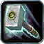
Concussion Blow
Warrior · Protection · 1 rank · row 5 (level 30+)Stuns the target for 5 sec. 10 Rage, 45 sec cooldown.
In 1 of our builds: Protection shield tank · Calculator

Conflagrate
Warlock · Destruction · 1 rank · row 4 (level 25+)Instant: consumes your Immolate on the target for 88–111 Fire damage. 100 mana, 30 yd, 10 sec cooldown.
In 3 of our builds: Destruction Fire, Destruction with Sayaad, Destruction PvP · Calculator
Consecrated Ground
Paladin · Holy · 2 ranks · row 5 (level 30+)Your Holy spells deal up to 10% more damage to the first 4 enemies that enter your Consecration.
In 4 of our builds: Shockadin (two-hander + Holy Shock), Holy Shock tank (Holy/Protection), Shockadin leveling +1 more · Calculator

Convection
Shaman · Elemental · 5 ranks · row 1 (level 10+)Shocks, Lightning Bolt and Chain Lightning cost up to 10% less mana.
In 5 of our builds: Elemental, Elemental leveling, Enhancement leveling +2 more · Calculator

Conviction
Paladin · Retribution · 3 ranks · row 2 (level 15+)Up to 6% critical strike chance (2 / 4 / 6%) with all spells and attacks.
In 8 of our builds: Holy healer, Protection raid tank, Protection dungeon tank +5 more · Calculator

Counterattack
Hunter · Survival · 1 rank · row 4 (level 25+) · needs DeterrenceAfter you parry: a strike for 50% weapon damage plus 26 that roots the target for 5 sec. Can't be blocked, dodged or parried. 5 sec cooldown.
In 2 of our builds: Marksmanship PvP, Melee Survival with pet · Calculator

Coup de Grace
Rogue · Combat · 3 ranks · row 1 (level 10+)Eviscerate deals up to 20% more damage (7 / 13 / 20%), and Death Mark deals up to 20% more and stores damage up to 20% faster.
In 5 of our builds: Mutilate, Combat, Subtlety Hemorrhage / Death Mark +2 more · Calculator
Critical Mass
Mage · Fire · 3 ranks · row 5 (level 30+)Up to +6% critical strike chance with Fire spells.
In 2 of our builds: Fire Combustion, Frostfire (Fire/Frost) · Calculator

Cruelty
Warrior · Fury · 5 ranks · row 1 (level 10+)Up to +5% melee critical strike chance.
In 6 of our builds: Arms two-hander, Fury dual-wield, Protection shield tank +3 more · Calculator

Curse of Exhaustion
Warlock · Affliction · 1 rank · row 4 (level 25+) · needs Amplify CurseSlows the target's movement by 30% for 12 sec. 8% of base mana, 30 yd, instant.
Not in any of our builds yet. · Calculator

Dark Inspiration
Priest · Shadow · 5 ranks · row 4 (level 25+)Mind Blast and fully channeled Mind Flay raise your party's Spirit (and yours) by up to 15% for 10 sec.
In 2 of our builds: Shadow, Shadow leveling · Calculator

Darkness
Priest · Shadow · 5 ranks · row 6 (level 35+)Your Shadow spells deal up to 10% more damage.
In 2 of our builds: Shadow, Shadow leveling · Calculator

Deadly Aspects
Hunter · Beast Mastery · 5 ranks · row 1 (level 10+)With Aspect of the Hawk, Auto Shot has up to a 10% chance to give +30% ranged attack speed for 12 sec; with Aspect of the Beast, melee auto attacks get the same for melee speed.
In 5 of our builds: Beast Mastery, Marksmanship Lone Wolf, Beast Mastery leveling +2 more · Calculator

Death Mark
Rogue · Subtlety · 1 rank · row 7 (level 40+) · needs PreparationCurse finisher for 25 Energy (20 yd, 10 sec cooldown): for 6 sec it stores 12% of the damage you deal per combo point (60% at 5; Garrote and Rupture store at double rate), then deals the stored damage. At 5 combo points the cap is 573 plus 20% of your Attack Power, raised by your crit chance.
In 2 of our builds: Subtlety Hemorrhage / Death Mark, Subtlety Hemorrhage leveling · Calculator
Death Wish
Warrior · Fury · 1 rank · row 5 (level 30+)For 30 sec: 20% more Physical damage and immune to Fear, but you take 5% more damage. 10 Rage, 3 min cooldown.
In 2 of our builds: Fury dual-wield, Bloodthirst tank (Fury/Protection) · Calculator

Decimation
Warlock · Demonology · 2 ranks · row 4 (level 25+)Soul Fire cooldown up to 90% shorter. Shadow Bolt and Searing Pain deal up to 6% more to targets under 35% health and, for 10 sec, make Soul Fire up to 40% faster and free of Soul Shards.
In 1 of our builds: Demonology Demonic Pact · Calculator

Deep Wounds
Warrior · Arms · 3 ranks · row 3 (level 20+) · needs Improved RendYour critical strikes make the target bleed for up to 60% of your weapon's average damage over 12 sec.
In 5 of our builds: Arms two-hander, Fury dual-wield, Protection shield tank +2 more · Calculator

Defiance
Warrior · Protection · 3 ranks · row 3 (level 20+)Up to 20% more threat (7 / 13 / 20%) in Defensive Stance with a shield equipped.
In 2 of our builds: Protection shield tank, Bloodthirst tank (Fury/Protection) · Calculator

Deflection
Warrior · Arms · 5 ranks · row 1 (level 10+)Up to +5% parry chance.
In 3 of our builds: Protection shield tank, Arms leveling, Arms PvP · Calculator

Deflection
Paladin · Retribution · 5 ranks · row 1 (level 10+)Up to +5% parry chance.
Not in any of our builds yet. · Calculator

Deflection
Hunter · Survival · 5 ranks · row 1 (level 10+)Up to +5% parry.
In 2 of our builds: Marksmanship PvP, Melee Survival with pet · Calculator

Deflection
Rogue · Combat · 3 ranks · row 2 (level 15+)Up to +6% parry.
In 4 of our builds: Mutilate, Combat, Subtlety Hemorrhage / Death Mark +1 more · Calculator
Demonic Aegis
Warlock · Demonology · 2 ranks · row 2 (level 15+)Demon Skin and Demon Armor are up to 30% stronger.
In 3 of our builds: Affliction Demonic Sacrifice, Destruction Fire, Destruction PvP · Calculator
Demonic Brand
Warlock · Demonology · 3 ranks · row 4 (level 25+)Searing Pain causes up to 50% less threat and brands the target for 10 sec: your demon's next 6 attacks add 65–68 Fire or Shadow damage plus 7.8% of your higher Fire or Shadow spell power. The Shadow version causes high threat.
In 2 of our builds: Demonology Demonic Pact, Demonology leveling · Calculator
Demonic Embrace
Warlock · Demonology · 5 ranks · row 1 (level 10+)Up to 15% more Stamina.
In 5 of our builds: Affliction Demonic Sacrifice, Destruction Fire, Drain-tank leveling (Voidwalker) +2 more · Calculator
Demonic Energies
Warlock · Demonology · 2 ranks · row 2 (level 15+)Your spell damage heals your demon for up to 15% of the damage, and Life Tap gives your demon up to 100% of the mana you gain.
In 4 of our builds: Demonology Demonic Pact, Affliction leveling, Drain-tank leveling (Voidwalker) +1 more · Calculator

Demonic Knowledge
Warlock · Demonology · 3 ranks · row 5 (level 30+)While your demon is out, you and it gain spell damage equal to up to 100% of your level.
In 2 of our builds: Demonology Demonic Pact, Demonology leveling · Calculator

Demonic Pact
Warlock · Demonology · 1 rank · row 7 (level 40+) · needs Soul LinkSummoning a different demon doesn't cancel Demonic Sacrifice (summoning the sacrificed demon type still does).
In 2 of our builds: Demonology Demonic Pact, Demonology leveling · Calculator
Demonic Sacrifice
Warlock · Demonology · 1 rank · row 3 (level 20+)Sacrifice your demon for a 2 hour buff: Imp +15% Shadow damage, Voidwalker 2% of max mana every 4 sec, Succubus/Incubus +15% Fire damage, Felhunter 3% of max health every 4 sec.
In 4 of our builds: Affliction Demonic Sacrifice, Demonology Demonic Pact, Destruction Fire +1 more · Calculator

Destructive Reach
Warlock · Destruction · 2 ranks · row 1 (level 10+)Destruction spells get up to 20% more range.
Not in any of our builds yet. · Calculator
Deterrence
Hunter · Survival · 1 rank · row 3 (level 20+)+25% dodge and parry for 10 sec. 5 min cooldown.
In 2 of our builds: Marksmanship PvP, Melee Survival with pet · Calculator
Devouring Contagion
Priest · Shadow · 2 ranks · row 5 (level 30+)Devouring Plague costs up to 50% less mana, and a target that dies with it spreads it to 2 enemies within 10 yd (critters don't count).
In 2 of our builds: Shadow, Shadow leveling · Calculator
Dirty Deeds
Rogue · Subtlety · 2 ranks · row 2 (level 15+)Cheap Shot and Garrote cost up to 20 less Energy, and Garrote works from the front.
In 3 of our builds: Subtlety Hemorrhage / Death Mark, Subtlety PvP, Subtlety Hemorrhage leveling · Calculator
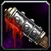
Dirty Tricks
Rogue · Subtlety · 2 ranks · row 2 (level 15+)Sap and Blind cost up to 50% less Energy.
In 2 of our builds: Subtlety Hemorrhage / Death Mark, Subtlety PvP · Calculator

Divine Aegis
Priest · Discipline · 3 ranks · row 6 (level 35+)Non-periodic critical heals also shield the target for up to 15% of the heal (max 1,200 damage) for 12 sec.
In 1 of our builds: Discipline healer · Calculator
Divine Favor
Paladin · Holy · 1 rank · row 3 (level 20+)Your next Flash of Light, Holy Light or Holy Shock heal is a guaranteed critical strike. 2 min cooldown.
In 7 of our builds: Holy healer, Retribution leveling, Holy PvP healer +4 more · Calculator
Divine Fury
Priest · Holy · 5 ranks · row 2 (level 15+)Smite, Holy Fire, Heal and Greater Heal cast up to 0.5 sec faster.
In 3 of our builds: Discipline healer, Holy healer, Smite priest (Holy damage) · Calculator

Divine Intellect
Paladin · Protection · 5 ranks · row 1 (level 10+)Up to 10% more Intellect.
In 6 of our builds: Holy healer, Retribution two-hander, Retribution leveling +3 more · Calculator

Divine Precision
Paladin · Holy · 2 ranks · row 4 (level 25+)Up to 8% hit chance (4 / 8%) with Holy Shock, Exorcism, Consecration, Holy Wrath, Holy Strike, Hammer of Justice, Repentance, Turn Evil and Light's Vigil (not Judgements, Seal of Command or Hammer of Wrath), and silences on you are up to 20% shorter.
In 6 of our builds: Holy healer, Holy PvP healer, Shockadin (two-hander + Holy Shock) +3 more · Calculator
Divine Strength
Paladin · Holy · 5 ranks · row 1 (level 10+)Up to 10% more Strength.
In 6 of our builds: Retribution two-hander, Retribution leveling, Shockadin (two-hander + Holy Shock) +3 more · Calculator

Dual Wield Specialization
Warrior · Fury · 5 ranks · row 4 (level 25+)Off-hand damage up to +25%, and off-hand attacks generate up to 50% more Rage.
In 1 of our builds: Fury dual-wield · Calculator

Dual Wield Specialization
Rogue · Combat · 2 ranks · row 5 (level 30+)Off-hand damage up to +50% (25 / 50%).
In 2 of our builds: Combat, Combat leveling · Calculator
Early Demise
Priest · Shadow · 2 ranks · row 6 (level 35+)Shadow Word: Death gets up to +30% crit chance on targets at or below 20% health.
Not in any of our builds yet. · Calculator

Earth's Grasp
Shaman · Enhancement · 2 ranks · row 1 (level 10+)Stoneclaw Totem has up to 50% more health and Earthbind Totem's radius is up to 20% larger.
In 2 of our builds: Elemental PvP, Shaman tank (shield + Rockbiter) · Calculator

Earthbound
Shaman · Elemental · 1 rank · row 4 (level 25+)Earthbind Totem roots nearby enemies for 5 sec when you drop it.
In 3 of our builds: Elemental leveling, Enhancement leveling, Elemental PvP · Calculator
Eclipse
Druid · Balance · 3 ranks · row 5 (level 30+)Wrath makes your next 2 Starfires cast up to 0.5 sec faster (up to 4 charges, 15 sec).
In 1 of our builds: Moonkin · Calculator

Efficiency
Hunter · Marksmanship · 5 ranks · row 2 (level 15+)Shots, Stings and melee abilities cost up to 15% less mana.
In 6 of our builds: Beast Mastery, Marksmanship Lone Wolf, Survival Lone Wolf +3 more · Calculator
Efficient Strikes
Rogue · Combat · 2 ranks · row 1 (level 10+)Sinister Strike and Hemorrhage cost up to 5 less Energy (3 / 5).
In 4 of our builds: Mutilate, Combat, Subtlety Hemorrhage / Death Mark +1 more · Calculator

Elemental Alacrity
Shaman · Elemental · 3 ranks · row 2 (level 15+)Lightning Bolt and Chain Lightning cast up to 0.5 sec faster.
In 4 of our builds: Elemental, Elemental leveling, Elemental PvP +1 more · Calculator
Elemental Devastation
Shaman · Elemental · 3 ranks · row 2 (level 15+)A critical strike with a direct damage spell gives up to +9% melee crit chance for 10 sec.
In 3 of our builds: Enhancement, Enhancement leveling, Elehance (Elemental/Enhancement) · Calculator
Elemental Focus
Shaman · Elemental · 1 rank · row 3 (level 20+)Fire, Frost and Nature damage spells have a 10% chance to make your next damage spell cost no mana (Clearcasting).
In 6 of our builds: Elemental, Enhancement, Elemental leveling +3 more · Calculator

Elemental Fury
Shaman · Elemental · 5 ranks · row 6 (level 35+) · needs Lightning OverloadFire, Frost and Nature spells and Searing and Magma Totems get up to +100% critical damage bonus.
In 4 of our builds: Elemental, Elemental leveling, Elemental PvP +1 more · Calculator
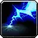
Elemental Reach
Shaman · Elemental · 2 ranks · row 5 (level 30+)Lightning Bolt, Chain Lightning and Fire Nova get up to +6 yd range.
In 1 of our builds: Elemental PvP · Calculator
Elemental Warding
Shaman · Elemental · 3 ranks · row 3 (level 20+)You take up to 10% less Fire, Frost and Nature damage.
In 1 of our builds: Elemental PvP · Calculator
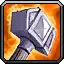
Elemental Weapons
Shaman · Enhancement · 3 ranks · row 3 (level 20+)Rockbiter's Attack Power bonus up to +20%, Windfury's effect up to +40%, Flametongue and Frostbrand damage up to +15%.
In 4 of our builds: Enhancement, Enhancement leveling, Shaman tank (shield + Rockbiter) +1 more · Calculator
Elusiveness
Rogue · Subtlety · 2 ranks · row 4 (level 25+)Vanish and Blind cooldowns up to 90 sec shorter.
In 3 of our builds: Subtlety Hemorrhage / Death Mark, Subtlety PvP, Subtlety Hemorrhage leveling · Calculator
Endurance
Rogue · Combat · 2 ranks · row 3 (level 20+)Sprint and Evasion cooldowns up to 60% shorter.
In 4 of our builds: Mutilate, Combat, Combat leveling +1 more · Calculator
Endurance Training
Hunter · Beast Mastery · 5 ranks · row 1 (level 10+)Your pet gets up to 15% more Health and Armor.
In 3 of our builds: Beast Mastery, Beast Mastery leveling, Marksmanship with pet · Calculator

Enrage
Warrior · Fury · 5 ranks · row 3 (level 20+)When you are hit, a 30% chance to deal up to 10% more Physical damage for 12 sec.
In 5 of our builds: Arms two-hander, Fury dual-wield, Arms leveling +2 more · Calculator
Entrapment
Hunter · Survival · 5 ranks · row 2 (level 15+)Enemies that trigger your traps are Entrapped (rooted) for up to 5 sec.
In 1 of our builds: Marksmanship PvP · Calculator

Expose Prey
Hunter · Survival · 2 ranks · row 5 (level 30+)Melee and ranged hits on a target with your Hunter's Mark have up to a 10% chance to enable Mongoose Bite for 10 sec.
In 2 of our builds: Survival Lone Wolf, Melee Survival with pet · Calculator

Eye for an Eye
Paladin · Retribution · 2 ranks · row 4 (level 25+)Critical hits against you deal up to 10% of their damage back to the attacker (at most 50% of your health).
In 2 of our builds: Retribution leveling, Shockadin leveling · Calculator
Eye of the Storm
Shaman · Elemental · 3 ranks · row 4 (level 25+)Up to a 70% chance that taking damage doesn't delay Lightning Bolt or Chain Lightning.
In 3 of our builds: Elemental, Elemental leveling, Elemental PvP · Calculator

Fel Concentration
Warlock · Affliction · 3 ranks · row 3 (level 20+)Up to a 70% chance that taking damage doesn't delay Drain Life, Drain Mana, Drain Soul or Wrack.
In 2 of our builds: Affliction leveling, Drain-tank leveling (Voidwalker) · Calculator

Fel Domination
Warlock · Demonology · 1 rank · row 4 (level 25+) · needs Master SummonerYour next demon summon is 5.5 sec faster and costs 50% less mana. 5 min cooldown.
In 2 of our builds: Drain-tank leveling (Voidwalker), Demonology leveling · Calculator
Fel Vitality
Warlock · Demonology · 3 ranks · row 2 (level 15+)Your demons get up to 15% more health and mana, and your maximum mana is up to 15% higher.
In 6 of our builds: Affliction Demonic Sacrifice, Demonology Demonic Pact, Destruction Fire +3 more · Calculator
Feral Charge
Druid · Feral Combat · 1 rank · row 3 (level 20+)Bear or Dire Bear Form: charge an enemy to immobilize it and interrupt its spellcasting for 4 sec. 5 Rage, 25 yd, 15 sec cooldown.
In 4 of our builds: Feral bear tank, Feral leveling, Restoration PvP +1 more · Calculator

Feral Instinct
Druid · Feral Combat · 3 ranks · row 2 (level 15+)Swipe deals up to 30% more damage, and Prowl is harder to see (up to 3 levels).
In 3 of our builds: Feral bear tank, Feral leveling, Pure bear (no Balance) · Calculator

Feral Swiftness
Druid · Feral Combat · 2 ranks · row 2 (level 15+)Up to 30% faster in Cat Form and up to +4% dodge.
In 3 of our builds: Feral bear tank, Feral leveling, Restoration PvP · Calculator

Ferocity
Hunter · Beast Mastery · 5 ranks · row 4 (level 25+)Your pet and hawks get up to +10% critical strike chance.
In 3 of our builds: Beast Mastery, Beast Mastery leveling, Marksmanship with pet · Calculator
Ferocity
Druid · Feral Combat · 5 ranks · row 1 (level 10+)Maul, Primal Bite, Swipe, Claw and Rake cost up to 5 less Rage or Energy.
In 4 of our builds: Feral cat, Feral bear tank, Feral leveling +1 more · Calculator

Fingers of Frost
Mage · Frost · 2 ranks · row 5 (level 30+) · needs Ice LanceYour Chill effects have a 15% chance to treat your next 2 spells (1 at rank 1) as if the target were Frozen. Lasts 15 sec.
In 4 of our builds: Frost Fingers of Frost, Frost leveling, Frost PvP +1 more · Calculator

Fire and Brimstone
Warlock · Destruction · 3 ranks · row 5 (level 30+) · needs ConflagrateConflagrate gets up to +25% crit chance.
In 3 of our builds: Destruction Fire, Destruction with Sayaad, Destruction PvP · Calculator

Fire Power
Mage · Fire · 3 ranks · row 6 (level 35+)Your Fire spells deal up to 3% more damage for each of your Fire effects on the target, up to +12%.
In 2 of our builds: Fire Combustion, Frostfire (Fire/Frost) · Calculator
Flame Throwing
Mage · Fire · 2 ranks · row 2 (level 15+)Fire spells get up to +6 yd range.
Not in any of our builds yet. · Calculator
Flash of Steel
Rogue · Combat · 5 ranks · row 6 (level 35+)Shank gives up to 15 extra Energy (3 per rank) and its cooldown is up to 2 sec shorter (0.4 sec per rank). Shank is the level-24 Rogue ability: an off-hand strike for 50% weapon damage that can't miss, 5 Energy, gives back 15 Energy, 10 sec cooldown.
In 2 of our builds: Combat, Combat leveling · Calculator
Flawless Execution
Rogue · Combat · 1 rank · row 4 (level 25+)Eviscerate costs 15 less Energy.
In 3 of our builds: Mutilate, Combat, Combat leveling · Calculator

Flurry
Warrior · Fury · 3 ranks · row 6 (level 35+)After a melee crit your next 3 swings are up to 30% faster (10 / 20 / 30%).
In 2 of our builds: Fury dual-wield, Bloodthirst tank (Fury/Protection) · Calculator

Flurry
Shaman · Enhancement · 5 ranks · row 4 (level 25+) · needs Mental DexterityAfter a melee crit your next 3 swings are up to 30% faster (6% per rank).
In 4 of our builds: Enhancement, Enhancement leveling, Shaman tank (shield + Rockbiter) +1 more · Calculator
Focused Fire
Hunter · Beast Mastery · 2 ranks · row 2 (level 15+)While your pet is out, you and your pet deal up to 2% more damage.
In 4 of our builds: Beast Mastery, Beast Mastery leveling, Melee Survival with pet +1 more · Calculator

Focused Rage
Warrior · Protection · 3 ranks · row 5 (level 30+)Offensive abilities cost up to 3 less Rage.
In 1 of our builds: Protection shield tank · Calculator
Frenzy
Hunter · Beast Mastery · 5 ranks · row 6 (level 35+) · needs FerocityUp to a 100% chance that your pet gains +30% attack speed for 8 sec after a critical hit.
In 2 of our builds: Beast Mastery, Beast Mastery leveling · Calculator

Frost Channeling
Mage · Frost · 3 ranks · row 3 (level 20+)Frost spells cost up to 15% less mana and cause up to 30% less threat.
In 1 of our builds: Frostfire (Fire/Frost) · Calculator
Frost Warding
Mage · Frost · 2 ranks · row 1 (level 10+)Frost Armor and Ice Armor give up to 30% more armor and resistance, Frost Ward has up to a 20% chance to negate the spell it absorbs, and Ice Barrier and Frost Ward absorb up to 20% more.
In 2 of our builds: Frost PvP, Frostfire (Fire/Frost) · Calculator

Frostbite
Mage · Frost · 3 ranks · row 2 (level 15+)Your Chill effects have up to a 15% chance to freeze the target for 5 sec. The freeze shares one diminishing-returns group with Entrapment, Counterattack, Improved Wing Clip and Improved Hamstring.
In 3 of our builds: Frost leveling, Frost PvP, Frostfire (Fire/Frost) · Calculator
Furious Precision
Warrior · Fury · 3 ranks · row 3 (level 20+)Up to +10% hit chance with off-hand attacks.
In 1 of our builds: Fury dual-wield · Calculator
Furor
Druid · Feral Combat · 5 ranks · row 1 (level 10+)Entering Bear or Dire Bear Form has up to a 100% chance to give 10 Rage. Entering Cat Form restores up to 100% of the Energy you had when you last left it, plus up to 10 Energy per sec spent outside Bear Form, capped at up to 100.
In 4 of our builds: Feral cat, Feral leveling, Restoration PvP +1 more · Calculator

Genesis
Druid · Balance · 5 ranks · row 1 (level 10+)Your periodic damage and healing are up to 10% stronger (2% per rank).
In 6 of our builds: Moonkin, Feral cat, Feral bear tank +3 more · Calculator
Ghostly Strike
Rogue · Subtlety · 1 rank · row 4 (level 25+)125% weapon damage and +15% dodge for 7 sec, and your next Ambush or Garrote within 7 sec can be used without Stealth. 1 combo point, 40 Energy, 20 sec cooldown.
In 3 of our builds: Subtlety Hemorrhage / Death Mark, Subtlety PvP, Subtlety Hemorrhage leveling · Calculator
Gift of Nature
Druid · Restoration · 5 ranks · row 3 (level 20+)All your healing spells heal up to 10% more.
In 2 of our builds: Restoration healer, Restoration PvP · Calculator

Gore Drinker
Warrior · Fury · 2 ranks · row 5 (level 30+) · needs Blood CrazeAfter Enrage, Berserker Rage, Bloodrage, Death Wish, Bloodthirst or Reckless Swings, your next 3 melee attacks each restore up to 1% of your max health. The healing causes no threat.
Not in any of our builds yet. · Calculator

Grim Reach
Warlock · Affliction · 2 ranks · row 2 (level 15+)Affliction spells get up to 20% more range.
In 1 of our builds: Drain-tank leveling (Voidwalker) · Calculator
Guardian Totems
Shaman · Enhancement · 2 ranks · row 2 (level 15+)Stoneskin and Windwall Totems reduce up to 20% more damage, and Grounding Totem's cooldown is up to 2 sec shorter.
In 1 of our builds: Elemental PvP · Calculator
Guardian's Favor
Paladin · Protection · 2 ranks · row 2 (level 15+)Blessing of Protection's cooldown is up to 2 min shorter and Blessing of Freedom lasts up to 6 sec longer.
In 2 of our builds: Protection dungeon tank, Holy PvP healer · Calculator
Hack and Slash
Rogue · Combat · 5 ranks · row 5 (level 30+)Bonus by weapon type, up to: Axe/Sword 5% chance for an extra attack, Dagger/Fist +5% crit, Mace ignores 15% armor.
In 2 of our builds: Combat, Combat leveling · Calculator

Hawk Eye
Hunter · Marksmanship · 3 ranks · row 1 (level 10+)Up to +6 yards range with ranged weapons.
In 3 of our builds: Marksmanship Lone Wolf, Beast Mastery leveling, Marksmanship PvP · Calculator
Healing Focus
Shaman · Restoration · 3 ranks · row 3 (level 20+)Up to a 70% chance that taking damage doesn't delay your healing spells.
In 1 of our builds: Restoration healer · Calculator

Healing Light
Paladin · Holy · 3 ranks · row 2 (level 15+)Holy Light, Flash of Light and Holy Shock heal up to 12% more.
In 2 of our builds: Holy healer, Holy PvP healer · Calculator
Healing Way
Shaman · Restoration · 3 ranks · row 5 (level 30+)Healing Wave heals up to 25% more.
In 1 of our builds: Restoration healer · Calculator
Heart of the Wild
Druid · Restoration · 5 ranks · row 1 (level 10+)Up to 10% more Intellect, 20% more Stamina in Bear/Dire Bear Form and 10% more Strength in Cat Form.
In 7 of our builds: Feral cat, Feral bear tank, Restoration healer +4 more · Calculator

Heating Up
Mage · Fire · 1 rank · row 4 (level 25+) · needs PyroblastDirect crits from Fireball, Frostfire Bolt, Fire Blast and Scorch make your next Pyroblast within 20 sec cast 25% faster, stacking 3 times; Fire Blast adds an extra stack whenever it deals damage.
In 3 of our builds: Arcane Power, Fire Combustion, Frostfire (Fire/Frost) · Calculator
Heightened Senses
Rogue · Subtlety · 2 ranks · row 5 (level 30+)See stealth as if up to 3 levels higher, and up to 4% less likely to be hit by spells and ranged attacks.
In 1 of our builds: Subtlety PvP · Calculator
Hemorrhage
Rogue · Subtlety · 1 rank · row 5 (level 30+) · needs Serrated Blades100% weapon damage; the target takes 15% more Rupture and Garrote damage from you for 15 sec. 1 combo point, 35 Energy.
In 3 of our builds: Subtlety Hemorrhage / Death Mark, Subtlety PvP, Subtlety Hemorrhage leveling · Calculator
Holy Binding
Priest · Holy · 1 rank · row 4 (level 25+)Each Flash Heal you cast on someone else heals you for 50% as much, with no threat.
In 2 of our builds: Discipline healer, Holy healer · Calculator
Holy Conduit
Paladin · Holy · 2 ranks · row 3 (level 20+)Consecration, Holy Wrath, Exorcism and Hammer of Wrath cost up to 40% less mana.
In 6 of our builds: Retribution two-hander, Retribution leveling, Shockadin (two-hander + Holy Shock) +3 more · Calculator
Holy Nova
Priest · Holy · 1 rank · row 3 (level 20+)Deals 26–30 Holy damage to enemies within 10 yd and heals party members within 10 yd for 50–57.
In 2 of our builds: Holy healer, Smite priest (Holy damage) · Calculator
Holy Power
Paladin · Holy · 5 ranks · row 6 (level 35+)Critical heals from your Holy spells heal up to 50% more (10% per rank).
In 2 of our builds: Holy healer, Holy PvP healer · Calculator

Holy Precision
Priest · Discipline · 3 ranks · row 2 (level 15+)Up to +18% hit chance with Holy spells.
In 1 of our builds: Smite priest (Holy damage) · Calculator
Holy Reach
Priest · Holy · 2 ranks · row 4 (level 25+)Smite and Holy Fire range, and Prayer of Healing and Holy Nova radius, up to +20%.
In 1 of our builds: Holy healer · Calculator

Holy Shield
Paladin · Protection · 1 rank · row 5 (level 30+)Increases block chance by 30% and deals Holy damage when you block. 10 sec cooldown.
In 3 of our builds: Protection raid tank, Protection dungeon tank, Holy Shock tank (Holy/Protection) · Calculator
Holy Shock
Paladin · Holy · 1 rank · row 5 (level 30+)Instantly damages an enemy or heals an ally with Holy power. 10 sec cooldown.
In 6 of our builds: Holy healer, Holy PvP healer, Shockadin (two-hander + Holy Shock) +3 more · Calculator
Holy Specialization
Priest · Holy · 5 ranks · row 1 (level 10+)Up to +5% crit chance with Holy spells.
In 3 of our builds: Discipline healer, Holy healer, Smite priest (Holy damage) · Calculator

Ice Barrier
Mage · Frost · 1 rank · row 7 (level 40+) · needs Cold SnapAbsorbs 448 damage plus 10% of your Frost spell power and raises your Frost damage by 15% for 1 min, plus another 5% while the shield holds; damage doesn't delay your casts while shielded. 305 mana, 30 sec cooldown.
In 3 of our builds: Frost Fingers of Frost, Frost leveling, Frost PvP · Calculator
Ice Block
Mage · Frost · 1 rank · row 4 (level 25+)Immune to physical attacks and spells for 10 sec, but you can't attack, move or cast. 5 min cooldown.
In 4 of our builds: Frost Fingers of Frost, Frost leveling, Frost PvP +1 more · Calculator
Ice Lance
Mage · Frost · 1 rank · row 3 (level 20+)Instant: 28–32 Frost damage, 300% more against Frozen targets. 45 mana, 30 yd, 8 sec cooldown shared with Fire Blast.
In 4 of our builds: Frost Fingers of Frost, Frost leveling, Frost PvP +1 more · Calculator
Ice Shards
Mage · Frost · 5 ranks · row 2 (level 15+)Frost spell critical strikes deal up to 100% more bonus damage.
In 4 of our builds: Frost Fingers of Frost, Frost leveling, Frost PvP +1 more · Calculator
Ignite
Mage · Fire · 5 ranks · row 2 (level 15+)Fire spell critical strikes, including Flamestrike's damage after its first hit, burn the target for up to an extra 40% of the damage over 4 sec.
In 4 of our builds: Arcane Power, Fire Combustion, Arcane leveling (chain-pull) +1 more · Calculator

Illumination
Paladin · Holy · 5 ranks · row 3 (level 20+) · needs ReverenceAfter a critical heal, up to a 100% chance (20% per rank) to get back 50% of the spell's base mana cost. Also triggers from Light's Vigil.
In 3 of our builds: Holy healer, Holy PvP healer, Holy Shock tank (Holy/Protection) · Calculator

Impact
Mage · Fire · 3 ranks · row 2 (level 15+)Fire spells have up to a 10% chance to stun the target for 2 sec.
Not in any of our builds yet. · Calculator

Impale
Warrior · Arms · 2 ranks · row 4 (level 25+) · needs Deep WoundsYour abilities' critical strikes deal up to 20% more bonus damage.
In 5 of our builds: Arms two-hander, Fury dual-wield, Protection shield tank +2 more · Calculator
Improved Ambush
Rogue · Subtlety · 3 ranks · row 2 (level 15+)Ambush gets up to +45% crit chance.
In 3 of our builds: Subtlety Hemorrhage / Death Mark, Subtlety PvP, Subtlety Hemorrhage leveling · Calculator
Improved Arcane Shot
Hunter · Marksmanship · 5 ranks · row 3 (level 20+)Arcane Shot's cooldown is up to 1.5 sec shorter.
Not in any of our builds yet. · Calculator

Improved Aspect of the Monkey
Hunter · Beast Mastery · 3 ranks · row 2 (level 15+)Aspect of the Monkey gives up to 6% more dodge, and your pet gets half of the bonus.
Not in any of our builds yet. · Calculator
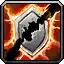
Improved Bane of Agony
Warlock · Affliction · 2 ranks · row 3 (level 20+)Bane of Agony deals up to 10% more damage.
In 3 of our builds: Affliction Demonic Sacrifice, Affliction leveling, Drain-tank leveling (Voidwalker) · Calculator

Improved Berserker Rage
Warrior · Fury · 2 ranks · row 5 (level 30+)Berserker Rage instantly gives up to 10 Rage and has up to a 100% chance to remove movement-slowing effects.
In 1 of our builds: Fury dual-wield · Calculator

Improved Blizzard
Mage · Frost · 3 ranks · row 3 (level 20+)Blizzard also Chills targets, slowing them by up to 40% for 1.5 sec.
In 1 of our builds: Frost Fingers of Frost · Calculator

Improved Bloodrage
Warrior · Protection · 2 ranks · row 1 (level 10+)Bloodrage generates up to 50% more Rage.
In 1 of our builds: Bloodthirst tank (Fury/Protection) · Calculator

Improved Channeling
Mage · Arcane · 5 ranks · row 1 (level 10+)Taking damage has up to a 100% chance not to cut Arcane Missiles short, and up to a 70% chance not to delay Arcane Blast or Arcane Wrath.
In 5 of our builds: Arcane Power, Fire Combustion, Frost leveling +2 more · Calculator
Improved Charge
Warrior · Arms · 2 ranks · row 2 (level 15+)Charge generates up to 6 more Rage.
In 1 of our builds: Arms PvP · Calculator

Improved Concussive Shot
Hunter · Marksmanship · 5 ranks · row 1 (level 10+)Concussive Shot has up to a 20% chance to stun for 3 sec.
In 1 of our builds: Marksmanship PvP · Calculator
Improved Cone of Cold
Mage · Frost · 3 ranks · row 5 (level 30+)Cone of Cold deals up to 35% more damage.
In 2 of our builds: Frost Fingers of Frost, Frost leveling · Calculator
Improved Corruption
Warlock · Affliction · 5 ranks · row 1 (level 10+)Corruption casts up to 2 sec faster and deals up to 10% more damage.
In 8 of our builds: Affliction Demonic Sacrifice, Affliction Ruin, Demonology Demonic Pact +5 more · Calculator
Improved Counterspell
Mage · Arcane · 2 ranks · row 4 (level 25+)Counterspell also silences the target for up to 4 sec.
In 1 of our builds: Frost PvP · Calculator

Improved Disarm
Warrior · Protection · 3 ranks · row 3 (level 20+)Disarm's cooldown is up to 20 sec shorter.
Not in any of our builds yet. · Calculator
Improved Drains
Warlock · Affliction · 3 ranks · row 2 (level 15+)Drain Life, Drain Soul and Drain Mana deal or drain more (7 / 13 / 20%).
In 3 of our builds: Affliction leveling, Drain-tank leveling (Voidwalker), Demonology leveling · Calculator

Improved Entangling Roots
Druid · Balance · 3 ranks · row 3 (level 20+)Entangling Roots deals up to 75% more damage, and rooted targets take up to 75% more damage from it.
In 1 of our builds: Balance multi-DoT leveling · Calculator
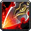
Improved Execute
Warrior · Fury · 2 ranks · row 4 (level 25+)Execute costs up to 5 less Rage.
In 2 of our builds: Arms two-hander, Bloodthirst tank (Fury/Protection) · Calculator
Improved Expose Armor
Rogue · Assassination · 2 ranks · row 2 (level 15+)Expose Armor costs up to 10 less Energy and, at 5 combo points, gives up to 2 combo points back.
Not in any of our builds yet. · Calculator
Improved Felhunter
Warlock · Demonology · 3 ranks · row 5 (level 30+)The Felhunter's Tainted Blood, Devour Magic heal and Paranoia are up to 30% stronger, and Spell Lock's cooldown is up to 6 sec shorter.
Not in any of our builds yet. · Calculator

Improved Fire Blast
Mage · Fire · 2 ranks · row 3 (level 20+)Fire Blast's cooldown is up to 2 sec shorter and its range up to 15 yd longer.
In 4 of our builds: Arcane Power, Fire Combustion, Arcane leveling (chain-pull) +1 more · Calculator
Improved Fire Ward
Mage · Fire · 2 ranks · row 4 (level 25+)Fire Ward has up to a 20% chance to reflect Fire spells.
Not in any of our builds yet. · Calculator
Improved Flamestrike
Mage · Fire · 3 ranks · row 3 (level 20+)Flamestrike gets up to +15% critical strike chance.
Not in any of our builds yet. · Calculator

Improved Frost Nova
Mage · Frost · 2 ranks · row 2 (level 15+)Frost Nova's cooldown is up to 4 sec shorter.
In 1 of our builds: Frost PvP · Calculator
Improved Frostbolt
Mage · Frost · 5 ranks · row 1 (level 10+)Frostbolt casts up to 0.5 sec faster.
In 3 of our builds: Frost Fingers of Frost, Frost leveling, Frost PvP · Calculator

Improved Ghost Wolf
Shaman · Enhancement · 2 ranks · row 4 (level 25+)Ghost Wolf casts up to 3 sec faster and works indoors.
In 4 of our builds: Enhancement, Enhancement leveling, Elemental PvP +1 more · Calculator
Improved Gouge
Rogue · Assassination · 3 ranks · row 1 (level 10+)Gouge lasts up to 1.5 sec longer.
In 1 of our builds: Subtlety Hemorrhage leveling · Calculator

Improved Hammer of Justice
Paladin · Protection · 3 ranks · row 3 (level 20+)Hammer of Justice's cooldown is up to 15 sec shorter.
Not in any of our builds yet. · Calculator
Improved Hamstring
Warrior · Arms · 3 ranks · row 6 (level 35+)Hamstring has up to a 15% chance to root the target for 5 sec. The root shares one diminishing-returns group with Entrapment, Counterattack, Improved Wing Clip and Frostbite.
In 1 of our builds: Arms PvP · Calculator
Improved Healing
Priest · Holy · 3 ranks · row 4 (level 25+)Lesser Heal, Heal, Greater Heal, Penance and Prayer of Mending cost up to 15% less mana.
In 2 of our builds: Discipline healer, Holy healer · Calculator

Improved Healing Wave
Shaman · Restoration · 5 ranks · row 1 (level 10+)Healing Wave casts up to 0.5 sec faster.
In 2 of our builds: Restoration healer, Elemental leveling · Calculator
Improved Health Funnel
Warlock · Demonology · 2 ranks · row 1 (level 10+)Health Funnel transfers up to 40% more health for up to 30% less health cost, with no threat, whatever your demon's health.
In 1 of our builds: Drain-tank leveling (Voidwalker) · Calculator
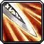
Improved Heroic Strike
Warrior · Arms · 3 ranks · row 1 (level 10+)Heroic Strike costs up to 3 less Rage.
In 4 of our builds: Arms two-hander, Fury dual-wield, Protection shield tank +1 more · Calculator
Improved Imp
Warlock · Demonology · 3 ranks · row 1 (level 10+)The Imp's Firebolt and Fire Shield are up to 30% stronger.
Not in any of our builds yet. · Calculator
Improved Inner Fire
Priest · Discipline · 3 ranks · row 4 (level 25+)Inner Fire gives up to 45% more armor and up to 12 more charges.
In 1 of our builds: Discipline/Shadow PvP · Calculator
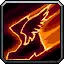
Improved Intercept
Warrior · Fury · 2 ranks · row 5 (level 30+)Intercept's cooldown is up to 10 sec shorter.
Not in any of our builds yet. · Calculator

Improved Judgement
Paladin · Retribution · 2 ranks · row 2 (level 15+)Judgement's cooldown is up to 2 sec shorter.
In 8 of our builds: Holy healer, Protection raid tank, Protection dungeon tank +5 more · Calculator
Improved Kick
Rogue · Combat · 2 ranks · row 4 (level 25+)Kick has up to a 100% chance to silence for 2 sec.
In 1 of our builds: Subtlety PvP · Calculator

Improved Kidney Shot
Rogue · Assassination · 2 ranks · row 5 (level 30+)Targets stunned by your Kidney Shot take up to 10% more damage from your attacks and poisons.
Not in any of our builds yet. · Calculator

Improved Life Tap
Warlock · Affliction · 2 ranks · row 1 (level 10+)Life Tap gives up to 20% more mana.
In 6 of our builds: Affliction Demonic Sacrifice, Affliction Ruin, Destruction with Sayaad +3 more · Calculator
Improved Lightning Shield
Shaman · Enhancement · 3 ranks · row 2 (level 15+)Lightning Shield orbs deal up to 15% more damage.
In 1 of our builds: Enhancement leveling · Calculator

Improved Mana Burn
Priest · Discipline · 2 ranks · row 4 (level 25+)Mana Burn casts up to 1 sec faster.
In 1 of our builds: Discipline/Shadow PvP · Calculator
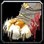
Improved Mend Pet
Hunter · Beast Mastery · 2 ranks · row 4 (level 25+)Each Mend Pet heal has up to a 50% chance to remove a Curse, Disease, Magic or Poison effect from your pet, and Mend Pet costs up to 20% less mana.
Not in any of our builds yet. · Calculator
Improved Mind Blast
Priest · Shadow · 5 ranks · row 2 (level 15+)Mind Blast's cooldown is up to 2.5 sec shorter.
In 2 of our builds: Shadow, Discipline/Shadow PvP · Calculator

Improved Mind Flay
Priest · Shadow · 2 ranks · row 3 (level 20+) · needs Mind FlayEach Mind Flay tick deals up to 20% more than the one before.
In 2 of our builds: Shadow, Shadow leveling · Calculator

Improved Moonfire
Druid · Balance · 2 ranks · row 2 (level 15+)Moonfire deals up to 10% more damage and gets up to +10% crit chance.
In 2 of our builds: Moonkin, Balance multi-DoT leveling · Calculator

Improved Overpower
Warrior · Arms · 2 ranks · row 2 (level 15+)Overpower gets up to +50% critical strike chance.
In 4 of our builds: Arms two-hander, Fury dual-wield, Arms leveling +1 more · Calculator
Improved Poisons
Rogue · Assassination · 5 ranks · row 4 (level 25+)Up to +10% chance to apply poisons, and up to a 50% chance an application doesn't use a charge.
Not in any of our builds yet. · Calculator

Improved Power Word: Shield
Priest · Discipline · 3 ranks · row 3 (level 20+)Power Word: Shield absorbs up to 20% more.
In 2 of our builds: Discipline healer, Discipline/Shadow PvP · Calculator

Improved Psychic Scream
Priest · Shadow · 2 ranks · row 3 (level 20+) · needs BlackoutPsychic Scream's cooldown is up to 4 sec shorter.
In 1 of our builds: Discipline/Shadow PvP · Calculator
Improved Regrowth
Druid · Restoration · 5 ranks · row 6 (level 35+) · needs Improved RejuvenationRegrowth gets up to +50% critical effect chance.
In 2 of our builds: Restoration healer, Restoration PvP · Calculator

Improved Reincarnation
Shaman · Restoration · 2 ranks · row 2 (level 15+)Reincarnation cooldown up to 20 min shorter, up to 4% more maximum health, and you return with up to 20% extra health and mana.
In 1 of our builds: Shaman tank (shield + Rockbiter) · Calculator
Improved Rejuvenation
Druid · Restoration · 3 ranks · row 4 (level 25+)Rejuvenation heals up to 15% more.
In 2 of our builds: Restoration healer, Restoration PvP · Calculator

Improved Rend
Warrior · Arms · 3 ranks · row 1 (level 10+)Rend's Bleed deals up to 35% more damage.
In 5 of our builds: Arms two-hander, Fury dual-wield, Protection shield tank +2 more · Calculator
Improved Renew
Priest · Holy · 3 ranks · row 1 (level 10+)Renew heals up to 15% more.
In 2 of our builds: Discipline healer, Holy healer · Calculator
Improved Revenge
Warrior · Protection · 3 ranks · row 2 (level 15+)Revenge deals up to 60% more damage.
In 2 of our builds: Protection shield tank, Bloodthirst tank (Fury/Protection) · Calculator
Improved Revive Pet
Hunter · Beast Mastery · 2 ranks · row 2 (level 15+)Revive Pet casts up to 6 sec faster, costs up to 40% less mana and brings the pet back with up to 30% more health.
In 1 of our builds: Beast Mastery leveling · Calculator
Improved Righteous Fury
Paladin · Protection · 3 ranks · row 4 (level 25+)While Righteous Fury is active you take up to 9% less damage.
In 3 of our builds: Protection raid tank, Protection dungeon tank, Holy Shock tank (Holy/Protection) · Calculator
Improved Sayaad
Warlock · Demonology · 3 ranks · row 3 (level 20+)Succubus/Incubus Lash of Pain and Soothing Kiss up to 30% stronger; Seduction and Lesser Invisibility up to 30% longer.
In 3 of our builds: Demonology Demonic Pact, Demonology leveling, Destruction PvP · Calculator
Improved Scorch
Mage · Fire · 3 ranks · row 4 (level 25+)Scorch has up to a 100% chance to make the target take 3% more Fire damage for 30 sec, stacking 5 times.
In 2 of our builds: Fire Combustion, Frostfire (Fire/Frost) · Calculator
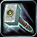
Improved Seals
Paladin · Holy · 5 ranks · row 2 (level 15+)Your Seals and Judgements deal up to 15% more damage.
In 6 of our builds: Retribution two-hander, Retribution leveling, Shockadin (two-hander + Holy Shock) +3 more · Calculator
Improved Shadow Bolt
Warlock · Destruction · 5 ranks · row 1 (level 10+)Shadow Bolt crits make the target take up to 20% more Shadow damage from you for 12 sec.
In 4 of our builds: Affliction Demonic Sacrifice, Affliction Ruin, Demonology Demonic Pact +1 more · Calculator

Improved Shadow Word: Pain
Priest · Shadow · 2 ranks · row 2 (level 15+)Shadow Word: Pain lasts up to 6 sec longer.
In 4 of our builds: Shadow, Shadow leveling, Discipline/Shadow PvP +1 more · Calculator

Improved Shield Bash
Warrior · Protection · 2 ranks · row 4 (level 25+)Shield Bash has up to a 100% chance to silence for 3 sec.
Not in any of our builds yet. · Calculator
Improved Shield Wall
Warrior · Protection · 2 ranks · row 5 (level 30+)Shield Wall's cooldown is up to 11 min shorter.
In 1 of our builds: Protection shield tank · Calculator

Improved Slam
Warrior · Arms · 2 ranks · row 6 (level 35+)Slam's cast time and global cooldown are up to 0.5 sec shorter and it doesn't interrupt or delay your melee swing. Its 15 sec cooldown is up to 5 sec shorter (2.5 / 5 sec).
In 2 of our builds: Arms two-hander, Arms leveling · Calculator
Improved Slice and Dice
Rogue · Assassination · 3 ranks · row 2 (level 15+)Slice and Dice lasts up to 45% longer.
In 5 of our builds: Mutilate, Combat, Subtlety Hemorrhage / Death Mark +2 more · Calculator

Improved Sprint
Rogue · Combat · 2 ranks · row 2 (level 15+)Sprint has up to a 100% chance to remove movement-slowing effects.
In 2 of our builds: Combat, Subtlety PvP · Calculator
Improved Starfire
Druid · Balance · 5 ranks · row 4 (level 25+)Starfire casts up to 0.5 sec faster and has a 15% chance to stun for 3 sec.
In 2 of our builds: Moonkin, Balance multi-DoT leveling · Calculator

Improved Stings
Hunter · Marksmanship · 3 ranks · row 2 (level 15+)Serpent Sting deals up to 20% more damage, Viper Sting's cooldown is up to 6 sec shorter and Scorpid Sting lasts up to 45 sec longer.
In 2 of our builds: Marksmanship Lone Wolf, Marksmanship PvP · Calculator

Improved Stormstrike
Shaman · Enhancement · 2 ranks · row 5 (level 30+) · needs StormstrikeStormstrike lets 50% of your mana regeneration continue while casting for 15 sec, and a dodge or parry has up to a 100% chance to reset its cooldown.
In 3 of our builds: Enhancement, Enhancement leveling, Shaman tank (shield + Rockbiter) · Calculator
Improved Sunder Armor
Warrior · Protection · 3 ranks · row 4 (level 25+)Sunder Armor costs up to 3 less Rage.
In 1 of our builds: Bloodthirst tank (Fury/Protection) · Calculator

Improved Tactical Mastery
Warrior · Arms · 3 ranks · row 2 (level 15+)You keep up to 15 extra Rage (5 / 10 / 15) when you change stances.
In 5 of our builds: Arms two-hander, Fury dual-wield, Protection shield tank +2 more · Calculator

Improved Thunder Clap
Warrior · Protection · 3 ranks · row 2 (level 15+)Thunder Clap costs up to 6 less Rage.
Not in any of our builds yet. · Calculator

Improved Tracking
Hunter · Survival · 5 ranks · row 1 (level 10+)Up to 5% more damage against the creature type you are tracking (Beasts, Demons, Dragonkin, Elementals, Giants, Humanoids or Undead).
In 3 of our builds: Marksmanship Lone Wolf, Survival Lone Wolf, Melee Survival with pet · Calculator
Improved Tranquility
Druid · Restoration · 2 ranks · row 5 (level 30+)Tranquility causes up to 100% less threat and its cooldown is up to 60% shorter.
Not in any of our builds yet. · Calculator
Improved Voidwalker
Warlock · Demonology · 3 ranks · row 2 (level 15+)The Voidwalker's Torment, Consume Shadows, Sacrifice and Suffering are up to 30% stronger.
In 1 of our builds: Drain-tank leveling (Voidwalker) · Calculator

Improved Whirlwind
Warrior · Fury · 2 ranks · row 6 (level 35+)Whirlwind's cooldown is up to 2 sec shorter, and it deals up to 30% more damage (15 / 30%) to the closest enemy.
In 2 of our builds: Fury dual-wield, Bloodthirst tank (Fury/Protection) · Calculator

Improved Wing Clip
Hunter · Survival · 3 ranks · row 2 (level 15+)Wing Clip has up to a 20% chance to root the target for 5 sec.
In 1 of our builds: Marksmanship PvP · Calculator

Improved Wrath
Druid · Balance · 5 ranks · row 1 (level 10+)Wrath casts up to 0.5 sec faster and costs up to 50% less mana.
In 2 of our builds: Moonkin, Balance multi-DoT leveling · Calculator

Incinerate
Warlock · Destruction · 1 rank · row 7 (level 40+) · needs Bane of Havoc2.5 sec cast: 100–114 Fire damage, 25% more if the target has your Immolate. 205 mana, 30 yd.
In 2 of our builds: Destruction Fire, Destruction with Sayaad · Calculator
Incineration
Mage · Fire · 5 ranks · row 1 (level 10+)Fire Blast, Ice Lance, Arcane Blast and Scorch get up to +10% critical strike chance.
In 5 of our builds: Arcane Power, Fire Combustion, Frost leveling +2 more · Calculator

Infusion of Light
Paladin · Holy · 2 ranks · row 4 (level 25+)Holy Shock and Flash of Light crits cut your next Holy Light's cast time by up to 1 sec.
In 4 of our builds: Holy healer, Holy PvP healer, Shockadin (two-hander + Holy Shock) +1 more · Calculator
Initiative
Rogue · Subtlety · 3 ranks · row 3 (level 20+)Ambush, Garrote and Cheap Shot have up to a 100% chance to add an extra combo point.
In 3 of our builds: Subtlety Hemorrhage / Death Mark, Subtlety PvP, Subtlety Hemorrhage leveling · Calculator

Inner Focus
Priest · Discipline · 1 rank · row 3 (level 20+)Your next spell costs no mana and, if it isn't a periodic effect, gets +25% crit chance. 3 min cooldown.
In 5 of our builds: Discipline healer, Holy healer, Shadow leveling +2 more · Calculator

Insect Swarm
Druid · Balance · 1 rank · row 4 (level 25+)A swarm deals 48 Nature damage over 12 sec and lowers the target's hit chance by 2%.
In 2 of our builds: Moonkin, Balance multi-DoT leveling · Calculator
Inspiration
Priest · Holy · 3 ranks · row 3 (level 20+)Non-periodic critical heals raise the target's armor by up to 25% for 15 sec.
In 3 of our builds: Discipline healer, Holy healer, Smite priest (Holy damage) · Calculator
Intensity
Warlock · Destruction · 3 ranks · row 4 (level 25+)Up to a 70% chance that taking damage doesn't delay your Destruction spells.
In 1 of our builds: Destruction PvP · Calculator
Intimidation
Hunter · Beast Mastery · 1 rank · row 5 (level 30+) · needs Bestial SwiftnessYour pet's next hit stuns the target for 3 sec and has +100% crit chance; it also causes high threat. 1 min cooldown.
In 2 of our builds: Beast Mastery, Beast Mastery leveling · Calculator

Iron Creed
Paladin · Protection · 3 ranks · row 6 (level 35+)Up to 30% more Holy Strike threat and up to 6% less damage taken.
In 2 of our builds: Protection raid tank, Protection dungeon tank · Calculator

Iron Will
Warrior · Protection · 5 ranks · row 1 (level 10+)Stun and Fear effects on you are up to 15% shorter.
Not in any of our builds yet. · Calculator

Lacerate
Druid · Feral Combat · 1 rank · row 4 (level 25+) · needs Savage FuryBear or Dire Bear Form: a bleed for 20 damage over 15 sec plus 10% weapon damage per existing application, stacking 5 times, with high threat. 15 Rage. Higher spell ranks at levels 34, 42, 50 and 58.
In 3 of our builds: Feral bear tank, Feral leveling, Pure bear (no Balance) · Calculator

Lacerating Strikes
Hunter · Survival · 1 rank · row 7 (level 40+) · needs Expose PreyMongoose Bite also makes the target bleed for 40% of its damage over 21 sec. Your newest bleed always overwrites your earlier one.
In 2 of our builds: Survival Lone Wolf, Melee Survival with pet · Calculator
Last Stand
Warrior · Protection · 1 rank · row 3 (level 20+)Gain 30% of your max health for 20 sec; the health is lost when it ends. 3 min cooldown.
In 2 of our builds: Protection shield tank, Bloodthirst tank (Fury/Protection) · Calculator

Leader of the Pack
Druid · Feral Combat · 1 rank · row 5 (level 30+)In Cat, Bear or Dire Bear Form, party and raid members within 45 yd get +3% chance on every type of critical strike. Doesn't stack with the Moonkin Form aura.
In 4 of our builds: Feral cat, Feral bear tank, Feral leveling +1 more · Calculator
Lethal Attacks
Hunter · Marksmanship · 5 ranks · row 1 (level 10+)Up to +5% critical strike chance with all attacks.
In 6 of our builds: Beast Mastery, Marksmanship Lone Wolf, Survival Lone Wolf +3 more · Calculator

Lethality
Rogue · Assassination · 2 ranks · row 3 (level 20+) · needs MaliceUp to +20% critical damage bonus (10% per rank) on Sinister Strike, Gouge, Backstab, Mutilate, Ghostly Strike and Hemorrhage.
In 4 of our builds: Mutilate, Combat, Combat leveling +1 more · Calculator
Light's Vigil
Paladin · Holy · 1 rank · row 7 (level 40+) · needs Holy ShockGrants Vigil to a friendly target for 30 sec (40 yd): your next Holy Shock on that ally skips the cooldown and heals them and their party.
In 2 of our builds: Holy healer, Holy PvP healer · Calculator

Lightning Mastery
Shaman · Elemental · 1 rank · row 7 (level 40+) · needs Call of ThunderFor 15 sec: Lightning Bolt casts 0.5 sec faster and Chain Lightning has no cooldown. 3 min cooldown.
In 3 of our builds: Elemental, Elemental leveling, Elemental PvP · Calculator

Lightning Overload
Shaman · Elemental · 3 ranks · row 5 (level 30+) · needs Elemental AlacrityLightning Bolt and Chain Lightning have up to a 30% chance (10 / 20 / 30%) to fire a second copy at the same target for half damage, free and with no threat.
In 4 of our builds: Elemental, Elemental leveling, Elemental PvP +1 more · Calculator
Lightning Reflexes
Hunter · Survival · 5 ranks · row 6 (level 35+)Up to 15% more Agility (3% per rank).
In 2 of our builds: Survival Lone Wolf, Melee Survival with pet · Calculator
Lightning Reflexes
Rogue · Combat · 5 ranks · row 1 (level 10+)Up to +5% dodge.
In 1 of our builds: Subtlety PvP · Calculator
Lingering Rage
Warrior · Fury · 5 ranks · row 2 (level 15+)After combat your Rage starts to decay up to 10 sec later.
In 3 of our builds: Arms two-hander, Fury dual-wield, Arms PvP · Calculator
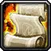
Litany of Light
Priest · Holy · 2 ranks · row 5 (level 30+)A heal cast after a different heal refunds up to 10% of its base mana cost.
In 1 of our builds: Holy healer · Calculator

Living Spirit
Druid · Restoration · 3 ranks · row 5 (level 30+)Up to 15% more Spirit.
In 2 of our builds: Restoration healer, Restoration PvP · Calculator
Lone Wolf
Hunter · Marksmanship · 1 rank · row 3 (level 20+)With no pet out, all your attacks deal 20% more damage.
In 2 of our builds: Marksmanship Lone Wolf, Survival Lone Wolf · Calculator
Maelstrom Weapon
Shaman · Enhancement · 5 ranks · row 6 (level 35+)Melee hits grant a stack (max 5, 30 sec), on average up to 10 per minute (6 / 7 / 8 / 9 / 10), adjusted for your main-hand weapon speed. Each stack cuts your next Lightning Bolt's cast time and mana cost by 20%.
In 1 of our builds: Enhancement · Calculator
Magic Absorption
Mage · Arcane · 2 ranks · row 2 (level 15+)Up to +10 to all resistances; fully resisted spells give back up to 2% of your total mana (at most once per second).
In 2 of our builds: Frost Fingers of Frost, Frost PvP · Calculator
Malevolence
Warlock · Affliction · 5 ranks · row 4 (level 25+)Up to +5% critical effect chance with Shadow spells.
In 5 of our builds: Affliction Demonic Sacrifice, Affliction Ruin, Affliction leveling +2 more · Calculator
Malice
Rogue · Assassination · 5 ranks · row 1 (level 10+)Up to +5% crit chance with all attacks and poisons.
In 6 of our builds: Mutilate, Combat, Subtlety Hemorrhage / Death Mark +3 more · Calculator

Mana Tide Totem
Shaman · Restoration · 1 rank · row 4 (level 25+)A totem for 12 sec that restores 88 mana every 3 sec to group members within 30 yd. 10 mana, 5 min cooldown.
In 1 of our builds: Restoration healer · Calculator

Martyrdom
Priest · Discipline · 2 ranks · row 2 (level 15+)Melee and ranged crits against you have up to a 100% chance to give Focused Casting for 6 sec, and you resist interrupts up to 20% better.
In 1 of our builds: Discipline/Shadow PvP · Calculator
Master Demonologist
Warlock · Demonology · 5 ranks · row 6 (level 35+)You and your demon get, by demon (up to): Imp +10% Fire damage, Voidwalker −10% Physical damage taken, Succubus/Incubus +10% Shadow damage, Felhunter −10% magic damage taken.
In 2 of our builds: Demonology Demonic Pact, Demonology leveling · Calculator

Master of Deception
Rogue · Subtlety · 3 ranks · row 1 (level 10+)Enemies detect you in Stealth as if you were up to 3 levels higher.
In 2 of our builds: Subtlety PvP, Subtlety Hemorrhage leveling · Calculator
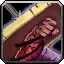
Master of Defense
Warrior · Protection · 2 ranks · row 3 (level 20+) · needs Shield SpecializationUp to a 100% chance to gain 5 Rage when you dodge or parry with a shield equipped.
In 2 of our builds: Protection shield tank, Bloodthirst tank (Fury/Protection) · Calculator
Master of Elements
Mage · Fire · 3 ranks · row 4 (level 25+)Fire and Frost spell critical strikes refund up to 30% of the spell's base mana cost.
In 2 of our builds: Fire Combustion, Frostfire (Fire/Frost) · Calculator

Master Summoner
Warlock · Demonology · 2 ranks · row 3 (level 20+)Summoning a demon takes up to 4 sec less and costs up to 40% less mana.
In 3 of our builds: Demonology Demonic Pact, Drain-tank leveling (Voidwalker), Demonology leveling · Calculator

Meditation
Priest · Discipline · 3 ranks · row 3 (level 20+)Up to 50% of your mana regeneration continues while casting.
In 6 of our builds: Discipline healer, Holy healer, Shadow +3 more · Calculator

Mental Agility
Priest · Discipline · 3 ranks · row 3 (level 20+)Smite, Holy Fire and your instant spells cost up to 10% less mana.
In 4 of our builds: Discipline healer, Shadow leveling, Discipline/Shadow PvP +1 more · Calculator

Mental Dexterity
Shaman · Enhancement · 3 ranks · row 2 (level 15+)Gain Attack Power equal to up to 100% of your Intellect (33 / 66 / 100%).
In 4 of our builds: Enhancement, Enhancement leveling, Shaman tank (shield + Rockbiter) +1 more · Calculator

Mental Quickness
Shaman · Enhancement · 2 ranks · row 5 (level 30+)Gain spell damage and healing equal to up to 30% of your Intellect.
In 4 of our builds: Enhancement, Enhancement leveling, Shaman tank (shield + Rockbiter) +1 more · Calculator

Mental Strength
Priest · Discipline · 5 ranks · row 2 (level 15+)Up to 10% more Intellect.
In 4 of our builds: Discipline healer, Holy healer, Shadow +1 more · Calculator
Mind Flay
Priest · Shadow · 1 rank · row 3 (level 20+)Channel: 63 Shadow damage over 3 sec and slows the target by 50%. 45 mana, 20 yd.
In 3 of our builds: Shadow, Shadow leveling, Discipline/Shadow PvP · Calculator

Mindfulness
Shaman · Restoration · 3 ranks · row 2 (level 15+)Up to 50% of your mana regeneration continues while casting.
In 5 of our builds: Elemental, Restoration healer, Elemental leveling +2 more · Calculator

Missile Barrage
Mage · Arcane · 2 ranks · row 2 (level 15+)Arcane Blast (up to 40%) and Arcane Wrath, Fireball, Frostbolt and Frostfire Bolt (up to 20%) can make your next Arcane Missiles free, with a 50% shorter channel and a missile every 0.5 sec. It is used up as soon as Arcane Missiles starts, and Clearcasting isn't spent on Arcane Missiles while it is active.
In 4 of our builds: Arcane Power, Fire Combustion, Frost leveling +1 more · Calculator

Molten Skin
Warlock · Destruction · 5 ranks · row 2 (level 15+)All damage you take is up to 10% lower.
In 1 of our builds: Destruction PvP · Calculator
Moonfury
Druid · Balance · 5 ranks · row 6 (level 35+)Your Arcane and Nature spells deal up to 10% more damage.
In 2 of our builds: Moonkin, Balance multi-DoT leveling · Calculator
Moonglow
Druid · Balance · 3 ranks · row 2 (level 15+)Damaging spells cost up to 25% less mana.
In 3 of our builds: Moonkin, Restoration healer, Balance multi-DoT leveling · Calculator
Moonkin Form
Druid · Balance · 1 rank · row 7 (level 40+)Moonkin shape: +360% armor from items, Omen of Clarity procs twice as often, and party and raid members within 45 yd get +3% chance on every type of critical strike; doesn't stack with Leader of the Pack. Protects from Polymorph, but you can't cast healing spells. 35% of base mana, instant.
In 2 of our builds: Moonkin, Balance multi-DoT leveling · Calculator
Mortal Shots
Hunter · Marksmanship · 5 ranks · row 4 (level 25+) · needs Careful AimRanged critical strikes deal up to 30% more bonus damage.
In 5 of our builds: Beast Mastery, Marksmanship Lone Wolf, Survival Lone Wolf +2 more · Calculator
Mortal Strike
Warrior · Arms · 1 rank · row 7 (level 40+) · needs Sweeping StrikesWeapon damage plus 85, and the target receives 50% less healing for 10 sec. 30 Rage, 6 sec cooldown.
In 3 of our builds: Arms two-hander, Arms leveling, Arms PvP · Calculator
Mutilate
Rogue · Assassination · 1 rank · row 7 (level 40+) · needs VenomDagger attack with both weapons for 90% weapon damage plus 40 per weapon, and 20% more damage to poisoned targets. Adds 2 combo points. 60 Energy.
In 1 of our builds: Mutilate · Calculator
Natural Grace
Shaman · Restoration · 3 ranks · row 2 (level 15+)Your spells cause up to 15% less threat.
Not in any of our builds yet. · Calculator
Natural Instinct
Druid · Feral Combat · 2 ranks · row 5 (level 30+)Melee crits deal up to 20% more bonus damage, and you gain healing equal to up to 25% of your Intellect.
In 4 of our builds: Feral cat, Feral bear tank, Feral leveling +1 more · Calculator

Natural Reaction
Druid · Feral Combat · 5 ranks · row 6 (level 35+)Up to +5% dodge, and up to a 100% chance to gain 5 Rage each time you dodge.
In 1 of our builds: Pure bear (no Balance) · Calculator

Natural Shapeshifter
Druid · Restoration · 3 ranks · row 2 (level 15+)Shapeshifting costs up to 30% less mana.
In 1 of our builds: Restoration PvP · Calculator

Naturalist
Druid · Restoration · 5 ranks · row 2 (level 15+)Healing Touch and Wild Growth cast up to 0.5 sec faster, and all your damage is up to 10% higher (2% per rank).
In 5 of our builds: Moonkin, Feral cat, Restoration healer +2 more · Calculator
Nature's Focus
Druid · Restoration · 5 ranks · row 1 (level 10+)Up to a 70% chance that taking damage doesn't delay your spell casts.
In 3 of our builds: Moonkin, Restoration healer, Restoration PvP · Calculator
Nature's Grace
Druid · Balance · 1 rank · row 5 (level 30+)After a non-periodic spell crit, your casts and global cooldown are 10% faster for 3 sec.
In 2 of our builds: Moonkin, Balance multi-DoT leveling · Calculator
Nature's Majesty
Druid · Balance · 2 ranks · row 2 (level 15+)Up to +4% critical strike chance with spells and melee attacks.
In 6 of our builds: Moonkin, Feral cat, Feral bear tank +3 more · Calculator

Nature's Reach
Druid · Balance · 2 ranks · row 2 (level 15+)Balance spells get up to 20% more range and up to +4% hit chance.
In 6 of our builds: Moonkin, Feral cat, Feral bear tank +3 more · Calculator

Nature's Splendor
Druid · Balance · 1 rank · row 3 (level 20+) · needs Nature's MajestyMoonfire and Rejuvenation last 3 sec longer, Regrowth 6 sec and Insect Swarm 2 sec.
In 3 of our builds: Moonkin, Restoration healer, Balance multi-DoT leveling · Calculator

Nature's Swiftness
Shaman · Restoration · 1 rank · row 5 (level 30+)Your next Nature spell with a cast time under 10 sec is instant. 3 min cooldown.
In 1 of our builds: Restoration healer · Calculator
Nature's Swiftness
Druid · Restoration · 1 rank · row 5 (level 30+) · needs NaturalistYour next Nature spell with a cast time under 10 sec, or your next Wild Growth, is instant. 3 min cooldown.
In 2 of our builds: Restoration healer, Restoration PvP · Calculator

Nightfall
Warlock · Affliction · 2 ranks · row 4 (level 25+)Corruption, Drain Soul, Drain Life and Wrack have up to a 4% chance to make your next Shadow Bolt instant (Shadow Trance).
In 4 of our builds: Affliction Demonic Sacrifice, Affliction Ruin, Affliction leveling +1 more · Calculator

Oath of Light
Paladin · Holy · 1 rank · row 4 (level 25+)Swear an Oath on one ally for 5 min: your Holy Light heals them for 400 more, Flash of Light for 115 more and Holy Shock for 230 more. One Oath at a time; 8% of base mana, 40 yd, instant.
In 4 of our builds: Holy healer, Holy PvP healer, Shockadin leveling +1 more · Calculator
Opportunity
Rogue · Subtlety · 5 ranks · row 1 (level 10+)Backstab, Garrote, Ambush and Mutilate deal up to 20% more damage (4% per rank).
In 3 of our builds: Subtlety Hemorrhage / Death Mark, Subtlety PvP, Subtlety Hemorrhage leveling · Calculator
Overgrowth
Druid · Balance · 2 ranks · row 5 (level 30+)Entangling Roots hits up to 2 more targets.
In 1 of our builds: Balance multi-DoT leveling · Calculator
Pandemic
Warlock · Affliction · 3 ranks · row 3 (level 20+)Critical hits from Corruption, Bane of Agony, Bane of Doom, Drain Soul, Drain Life, Siphon Life and Wrack deal up to 100% more bonus damage.
In 5 of our builds: Affliction Demonic Sacrifice, Affliction Ruin, Destruction with Sayaad +2 more · Calculator
Pathfinding
Hunter · Beast Mastery · 2 ranks · row 3 (level 20+)Aspect of the Cheetah and Aspect of the Pack give up to 6% more speed.
In 1 of our builds: Beast Mastery leveling · Calculator
Penance
Priest · Discipline · 1 rank · row 5 (level 30+)2 sec channel: 45 Holy damage to an enemy or 134 healing to an ally every second. 150 mana, 36 yd, 12 sec cooldown.
In 2 of our builds: Discipline healer, Discipline/Shadow PvP · Calculator
Permafrost
Mage · Frost · 3 ranks · row 2 (level 15+)Chill effects last up to 33% longer and slow the target by up to another 10%.
In 1 of our builds: Frost PvP · Calculator
Piercing Howl
Warrior · Fury · 1 rank · row 3 (level 20+)Enemies within 10 yd are Dazed: 50% slower for 6 sec. 10 Rage, instant.
In 2 of our builds: Arms leveling, Arms PvP · Calculator
Power in Light
Priest · Discipline · 5 ranks · row 1 (level 10+)Smite and Penance deal up to 10% more damage to targets with your Holy Fire or Shadow Word: Pain.
In 1 of our builds: Smite priest (Holy damage) · Calculator

Power Infusion
Priest · Discipline · 1 rank · row 7 (level 40+) · needs Penance+20% spell damage and healing for 15 sec. 3 min cooldown.
In 2 of our builds: Discipline healer, Discipline/Shadow PvP · Calculator
Prayer of Mending
Priest · Holy · 1 rank · row 7 (level 40+) · needs Spirit of RedemptionPuts a prayer on an ally that heals 172 the next time they take damage or a direct heal, then jumps up to 5 times to allies within 20 yd. 210 mana, 40 yd, 10 sec cooldown.
In 1 of our builds: Holy healer · Calculator
Precision
Paladin · Protection · 3 ranks · row 2 (level 15+)Up to +3% hit chance with melee attacks and up to +3% with spells.
In 5 of our builds: Protection raid tank, Protection dungeon tank, Retribution two-hander +2 more · Calculator

Precision
Rogue · Combat · 3 ranks · row 2 (level 15+)Up to +3% hit chance.
In 5 of our builds: Mutilate, Combat, Subtlety Hemorrhage / Death Mark +2 more · Calculator

Precision
Mage · Frost · 3 ranks · row 1 (level 10+)Up to +6% hit chance with all spells.
In 7 of our builds: Arcane Power, Fire Combustion, Frost Fingers of Frost +4 more · Calculator
Predator's Edge
Hunter · Survival · 5 ranks · row 4 (level 25+)Melee ability crits deal up to 30% more bonus damage, and your off-hand weapon deals up to 50% more damage.
In 2 of our builds: Survival Lone Wolf, Melee Survival with pet · Calculator

Predatory Discipline
Druid · Feral Combat · 1 rank · row 4 (level 25+)Ferocious Bite doesn't spend your extra Energy, but still deals extra damage based on it.
In 3 of our builds: Feral cat, Feral bear tank, Feral leveling · Calculator
Predatory Strikes
Druid · Feral Combat · 3 ranks · row 4 (level 25+)In Cat, Bear and Dire Bear Form your melee attack power rises by up to 150% of your level.
In 4 of our builds: Feral cat, Feral bear tank, Feral leveling +1 more · Calculator
Premeditation
Rogue · Subtlety · 1 rank · row 3 (level 20+)Adds 2 combo points to a target from Stealth; use them within 20 sec. 2 min cooldown.
In 3 of our builds: Subtlety Hemorrhage / Death Mark, Subtlety PvP, Subtlety Hemorrhage leveling · Calculator
Preparation
Rogue · Subtlety · 1 rank · row 5 (level 30+)Finishes the cooldown of your other Rogue abilities. 10 min cooldown.
In 3 of our builds: Subtlety Hemorrhage / Death Mark, Subtlety PvP, Subtlety Hemorrhage leveling · Calculator

Presence of Mind
Mage · Arcane · 1 rank · row 5 (level 30+)Your next Mage spell with a cast time under 10 sec is instant. 3 min cooldown.
In 2 of our builds: Arcane Power, Arcane leveling (chain-pull) · Calculator

Primal Bite
Druid · Feral Combat · 1 rank · row 7 (level 40+) · needs Leader of the PackBear or Dire Bear Form: bite for 100% weapon damage plus 42 (62 and 77 at higher spell ranks) with high threat. 20 Rage, 6 sec cooldown.
In 3 of our builds: Feral bear tank, Feral leveling, Pure bear (no Balance) · Calculator
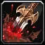
Puncturing Wounds
Rogue · Combat · 3 ranks · row 2 (level 15+)Backstab up to +30% crit chance, Mutilate up to +15%, and Backstab has up to a 45% chance to add an extra combo point.
In 1 of our builds: Mutilate · Calculator

Purification
Shaman · Restoration · 5 ranks · row 6 (level 35+)Your healing spells heal up to 10% more.
In 1 of our builds: Restoration healer · Calculator
Purifying Power
Paladin · Holy · 2 ranks · row 2 (level 15+)Cleanse and Purify cost up to 20% less mana, and Exorcism and Holy Wrath cooldowns are up to 33% shorter (17 / 33%).
In 5 of our builds: Holy healer, Holy PvP healer, Shockadin (two-hander + Holy Shock) +2 more · Calculator

Pursuit of Justice
Paladin · Retribution · 2 ranks · row 3 (level 20+)Up to 15% faster movement (8 / 15%), mounted or on foot.
In 5 of our builds: Protection raid tank, Protection dungeon tank, Retribution leveling +2 more · Calculator
Pyroblast
Mage · Fire · 1 rank · row 3 (level 20+)6 sec cast: 101–131 Fire damage plus 44 over 12 sec. 125 mana, 35 yd.
In 3 of our builds: Arcane Power, Fire Combustion, Frostfire (Fire/Frost) · Calculator
Pyroclasm
Warlock · Destruction · 2 ranks · row 5 (level 30+) · needs IntensitySoul Fire, Rain of Fire and Hellfire have up to a 26% chance to stun for 3 sec.
In 1 of our builds: Destruction PvP · Calculator
Quick Getaway
Rogue · Subtlety · 2 ranks · row 4 (level 25+) · needs Dirty TricksSap can hold one more target, and after you Sap something you move up to 30% faster (15 / 30%) for 3 sec.
In 1 of our builds: Subtlety Hemorrhage / Death Mark · Calculator
Rage of the Farseer
Shaman · Enhancement · 1 rank · row 7 (level 40+) · needs Mental Quickness+30% attack speed for 25 sec. 3 min cooldown.
In 2 of our builds: Enhancement, Shaman tank (shield + Rockbiter) · Calculator
Ranged Weapon Specialization
Hunter · Marksmanship · 5 ranks · row 6 (level 35+)Up to 5% more damage with ranged weapons.
In 3 of our builds: Marksmanship Lone Wolf, Marksmanship PvP, Marksmanship with pet · Calculator

Rapid Killing
Hunter · Marksmanship · 2 ranks · row 3 (level 20+)Rapid Fire's cooldown is up to 2 min shorter. Killing an enemy (or having it die with your Serpent Sting on it) makes your next Shot within 20 sec deal up to 20% more damage.
In 6 of our builds: Beast Mastery, Marksmanship Lone Wolf, Survival Lone Wolf +3 more · Calculator
Rapid Recuperation
Hunter · Marksmanship · 2 ranks · row 5 (level 30+) · needs Rapid KillingSerpent Sting lets up to 50% of your mana regeneration continue while casting for 15 sec, or up to 100% when you use a Rapid Killing proc.
In 1 of our builds: Marksmanship Lone Wolf · Calculator

Reckless Swings
Warrior · Fury · 1 rank · row 4 (level 25+)Costs 25% of your base health: your next 4 melee attacks within 8 sec generate 5 extra Rage each. 15 sec cooldown.
In 4 of our builds: Arms two-hander, Fury dual-wield, Arms leveling +1 more · Calculator
Reckoning
Paladin · Protection · 5 ranks · row 5 (level 30+)After you block (up to a 40% chance, 8% per rank) or take a non-periodic critical hit (up to 100%, 20% per rank) you gain an extra attack; stores up to 4 charges, at most one from blocks every 1.5 sec.
In 3 of our builds: Protection raid tank, Protection dungeon tank, Holy Shock tank (Holy/Protection) · Calculator
Redoubt
Paladin · Protection · 5 ranks · row 1 (level 10+)Damaging melee hits against you have a 10% chance to raise your block chance by up to 30% (6% per rank) for 10 sec or 5 blocks.
In 4 of our builds: Protection raid tank, Protection dungeon tank, Holy PvP healer +1 more · Calculator

Reflection
Druid · Restoration · 3 ranks · row 2 (level 15+)Up to 50% of your mana regeneration continues while casting.
In 2 of our builds: Restoration healer, Balance multi-DoT leveling · Calculator

Relentless Strikes
Rogue · Assassination · 5 ranks · row 5 (level 30+)Each combo point spent on a finishing move gives up to a 20% chance (4% per rank) to get 25 Energy back.
In 1 of our builds: Mutilate · Calculator
Remorseless Attacks
Rogue · Assassination · 2 ranks · row 1 (level 10+)After you kill an enemy that gives experience or honor, your next Sinister Strike, Backstab, Ambush, Mutilate or Ghostly Strike gets up to +40% crit chance (20 sec).
In 1 of our builds: Subtlety Hemorrhage leveling · Calculator
Rend and Tear
Druid · Feral Combat · 5 ranks · row 6 (level 35+) · needs Predatory StrikesYou deal up to 15% more damage (3% per rank) to bleeding targets.
In 4 of our builds: Feral cat, Feral bear tank, Feral leveling +1 more · Calculator

Renewed Hope
Priest · Discipline · 5 ranks · row 5 (level 30+) · needs Soul WardingFlash Heal, Lesser Heal, Heal, Greater Heal and Penance get up to +10% crit chance on targets with Weakened Soul, and Weakened Soul is up to 5 sec shorter.
In 2 of our builds: Discipline healer, Discipline/Shadow PvP · Calculator
Repentance
Paladin · Retribution · 1 rank · row 5 (level 30+)Puts an enemy out of action for a short time. 1 min cooldown.
In 3 of our builds: Retribution two-hander, Retribution leveling, Shockadin leveling · Calculator
Resourcefulness
Hunter · Survival · 2 ranks · row 5 (level 30+)Traps and melee abilities cost up to 60% less mana. Melee and ranged crits have up to a 100% chance to let 50% of your mana regeneration continue while casting for 30 sec.
In 2 of our builds: Survival Lone Wolf, Melee Survival with pet · Calculator
Restorative Totems
Shaman · Restoration · 5 ranks · row 4 (level 25+)Mana Spring Totem up to 25% stronger and Healing Stream Totem up to 50% stronger.
In 1 of our builds: Restoration healer · Calculator

Reverberation
Shaman · Elemental · 5 ranks · row 2 (level 15+)Shock cooldowns up to 1 sec shorter.
In 2 of our builds: Enhancement, Elehance (Elemental/Enhancement) · Calculator

Reverence
Paladin · Holy · 2 ranks · row 2 (level 15+)Up to 30% of your mana regeneration continues while casting.
In 7 of our builds: Holy healer, Retribution leveling, Holy PvP healer +4 more · Calculator
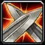
Riposte
Rogue · Combat · 1 rank · row 3 (level 20+) · needs DeflectionAfter you parry: a strike for 150% weapon damage that disarms the target for 6 sec. 6 sec cooldown.
In 1 of our builds: Combat leveling · Calculator

Riptide
Shaman · Restoration · 1 rank · row 7 (level 40+) · needs Healing WayHeals the target for 445 over 15 sec, and Chain Heal on that target is 25% stronger. 150 mana, 40 yd, 12 sec cooldown.
In 1 of our builds: Restoration healer · Calculator

Ruin
Warlock · Destruction · 5 ranks · row 3 (level 20+)Destruction spell critical hits deal up to 100% more bonus damage.
In 5 of our builds: Affliction Ruin, Demonology Demonic Pact, Destruction Fire +2 more · Calculator
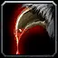
Ruthlessness
Rogue · Assassination · 3 ranks · row 2 (level 15+)Finishing moves have up to a 60% chance to put a combo point on the target.
In 5 of our builds: Mutilate, Combat, Subtlety Hemorrhage / Death Mark +2 more · Calculator

Sacred Arbiter
Paladin · Retribution · 1 rank · row 4 (level 25+)Holy Strike deals 20% more damage and refreshes all Judgement effects on the target.
In 7 of our builds: Protection raid tank, Protection dungeon tank, Retribution two-hander +4 more · Calculator

Sacred Duty
Paladin · Protection · 2 ranks · row 2 (level 15+)Divine Shield, Divine Protection and Templar's Bulwark cooldowns are up to 60 sec shorter, and Forbearance is up to 10 sec shorter.
In 4 of our builds: Holy healer, Protection raid tank, Protection dungeon tank +1 more · Calculator

Sanctified Judgement
Paladin · Retribution · 3 ranks · row 2 (level 15+)Your Judgements have up to a 100% chance (33 / 66 / 100%) to return up to 60% (20 / 40 / 60%) of the judged Seal's mana cost, without generating threat.
In 8 of our builds: Holy healer, Protection raid tank, Protection dungeon tank +5 more · Calculator

Savage Fury
Druid · Feral Combat · 2 ranks · row 3 (level 20+)Claw, Rake, Shred, Maul and Swipe deal up to 10% more damage.
In 4 of our builds: Feral cat, Feral bear tank, Feral leveling +1 more · Calculator

Savage Strikes
Hunter · Survival · 2 ranks · row 2 (level 15+)Up to +4% critical strike chance with melee abilities.
In 2 of our builds: Survival Lone Wolf, Melee Survival with pet · Calculator
Scatter Shot
Hunter · Marksmanship · 1 rank · row 5 (level 30+)50% weapon damage and disorients the target for 4 sec; damage breaks it. 30 sec cooldown.
In 2 of our builds: Marksmanship PvP, Marksmanship with pet · Calculator
Seal Fate
Rogue · Assassination · 3 ranks · row 6 (level 35+)Crits from combo-point abilities have up to a 100% chance (33 / 66 / 100%) to add an extra combo point.
In 1 of our builds: Mutilate · Calculator
Seal of Command
Paladin · Retribution · 1 rank · row 3 (level 20+)A Seal that gives your melee attacks a chance to deal extra Holy damage.
In 5 of our builds: Retribution two-hander, Retribution leveling, Shockadin (two-hander + Holy Shock) +2 more · Calculator
Searing Light
Priest · Holy · 2 ranks · row 4 (level 25+) · needs Divine FuryHoly damage up to +5%, and each Holy Fire tick has up to a 10% chance to make your next Holy Nova free.
In 1 of our builds: Smite priest (Holy damage) · Calculator
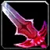
Serrated Blades
Rogue · Subtlety · 3 ranks · row 3 (level 20+)Attacks ignore up to 9% of target armor and Rupture deals up to 30% more damage.
In 3 of our builds: Subtlety Hemorrhage / Death Mark, Subtlety PvP, Subtlety Hemorrhage leveling · Calculator

Setup
Rogue · Subtlety · 3 ranks · row 1 (level 10+)Up to a 45% chance (15 / 30 / 45%) to gain a combo point when you dodge an attack or fully resist a spell.
In 2 of our builds: Subtlety PvP, Subtlety Hemorrhage leveling · Calculator
Shadow and Flame
Warlock · Destruction · 5 ranks · row 6 (level 35+)Conflagrate gives up to +20% Shadow damage and Shadowburn up to +20% Fire damage (4% per rank) for 20 sec; Conflagrate has up to a 100% chance not to consume Immolate and Shadowburn up to a 100% chance to refund its Soul Shard.
In 3 of our builds: Destruction Fire, Destruction with Sayaad, Destruction PvP · Calculator

Shadow Focus
Priest · Shadow · 5 ranks · row 1 (level 10+)Up to +5% hit chance with Shadow spells.
In 4 of our builds: Shadow, Shadow leveling, Discipline/Shadow PvP +1 more · Calculator
Shadow Mastery
Warlock · Affliction · 5 ranks · row 6 (level 35+)Your Shadow spells deal (and drain) up to 10% more.
In 4 of our builds: Affliction Demonic Sacrifice, Affliction Ruin, Affliction leveling +1 more · Calculator
Shadow Reach
Priest · Shadow · 2 ranks · row 2 (level 15+)Offensive Shadow spells get up to 20% more range.
In 3 of our builds: Shadow, Shadow leveling, Discipline/Shadow PvP · Calculator
Shadow Weaving
Priest · Shadow · 3 ranks · row 4 (level 25+)Your Shadow spells have up to a 100% chance to make the target take 2% more Shadow damage for 15 sec, stacking 5 times.
In 2 of our builds: Shadow, Shadow leveling · Calculator
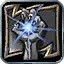
Shadowburn
Warlock · Destruction · 1 rank · row 3 (level 20+)Instant: 65–74 Shadow damage; if the target dies within 8 sec you get a Soul Shard. 105 mana, 30 yd, 15 sec cooldown, uses a Soul Shard.
In 3 of our builds: Destruction Fire, Destruction with Sayaad, Destruction PvP · Calculator
Shadowform
Priest · Shadow · 1 rank · row 7 (level 40+) · needs Vampiric EmbraceShadow damage +10%, Shadow spells cost 50% less mana and their crits deal +100% bonus damage, physical damage taken −15%; no healing spells while active.
In 2 of our builds: Shadow, Shadow leveling · Calculator
Shamanistic Focus
Shaman · Enhancement · 1 rank · row 3 (level 20+)Shocks and Lightning Shield cost 45% less mana.
In 5 of our builds: Enhancement, Enhancement leveling, Elemental PvP +2 more · Calculator
Sharpened Claws
Druid · Feral Combat · 2 ranks · row 3 (level 20+)Up to +6% crit chance in Bear, Dire Bear and Cat Form.
In 4 of our builds: Feral cat, Feral bear tank, Feral leveling +1 more · Calculator
Shatter
Mage · Frost · 3 ranks · row 4 (level 25+)Up to +50% critical strike chance with all spells against Frozen targets.
In 4 of our builds: Frost Fingers of Frost, Frost leveling, Frost PvP +1 more · Calculator
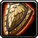
Shield Slam
Warrior · Protection · 1 rank · row 7 (level 40+) · needs Concussion BlowShield strike for 421–439 damage plus your Block Value, with a 50% chance to dispel 1 magic effect; very high threat. 20 Rage, 6 sec cooldown, needs a shield.
In 1 of our builds: Protection shield tank · Calculator

Shield Specialization
Warrior · Protection · 5 ranks · row 1 (level 10+)Up to +5% block chance, and up to a 100% chance to gain 5 Rage when you block.
In 2 of our builds: Protection shield tank, Bloodthirst tank (Fury/Protection) · Calculator
Shield Specialization
Paladin · Protection · 2 ranks · row 3 (level 20+) · needs RedoubtBlocks absorb up to 30% more and have up to a 100% chance (50 / 100%) to restore 4% mana, at most once every 3 sec.
In 3 of our builds: Protection raid tank, Protection dungeon tank, Holy Shock tank (Holy/Protection) · Calculator

Shieldsworn
Paladin · Protection · 1 rank · row 7 (level 40+) · needs Holy ShieldHoly Strike's cooldown is 4 sec shorter and it hits with your shield, triggering Holy Shield and Shield Specialization without using their charges. Also blocks spells for 6 sec.
In 2 of our builds: Protection raid tank, Protection dungeon tank · Calculator

Shifting Power
Druid · Feral Combat · 1 rank · row 7 (level 40+) · needs Predatory DisciplineCat Form, instant: turn 55% of your base mana into 40 Energy. Effects that lower shapeshift costs also lower this cost. 8 sec cooldown.
In 3 of our builds: Feral cat, Feral bear tank, Feral leveling · Calculator

Shredding Attacks
Druid · Feral Combat · 3 ranks · row 3 (level 20+)Shred costs up to 18 less Energy and Lacerate up to 3 less Rage.
In 3 of our builds: Feral cat, Feral bear tank, Pure bear (no Balance) · Calculator

Silence
Priest · Shadow · 1 rank · row 5 (level 30+)Silences the target for 5 sec (interrupts for 3 sec). 45 sec cooldown.
In 1 of our builds: Shadow leveling · Calculator

Silent Resolve
Priest · Discipline · 3 ranks · row 2 (level 15+)Up to 30% less threat, and Stun, Fear and Silence effects on you are up to 15% shorter.
In 3 of our builds: Holy healer, Shadow, Discipline/Shadow PvP · Calculator

Siphon Life
Warlock · Affliction · 1 rank · row 5 (level 30+)Steals 11 health from the target every 3 sec for 30 sec. 150 mana, 30 yd, instant.
In 4 of our builds: Affliction Demonic Sacrifice, Affliction Ruin, Affliction leveling +1 more · Calculator
Sniper Shot
Hunter · Marksmanship · 1 rank · row 7 (level 40+) · needs Trueshot Aura4 sec cast: ranged weapon damage plus 320, and your next 3 Shots within 10 sec get +10 yd range. 8–45 yd, 15 sec cooldown.
In 3 of our builds: Marksmanship Lone Wolf, Marksmanship PvP, Marksmanship with pet · Calculator

Soul Harvest
Warlock · Affliction · 2 ranks · row 2 (level 15+)After you kill a target that has your Drain Soul on it, mana regeneration is up to 100% higher for 10 sec and up to 100% of it continues while casting.
In 1 of our builds: Drain-tank leveling (Voidwalker) · Calculator
Soul Link
Warlock · Demonology · 1 rank · row 5 (level 30+) · needs Demonic Sacrifice30% of the damage you take goes to your demon instead, and you and your demon deal 3% more damage while it is out. 20% of base mana.
In 2 of our builds: Demonology Demonic Pact, Demonology leveling · Calculator
Soul Siphon
Warlock · Affliction · 3 ranks · row 5 (level 30+)Drain Life, Drain Soul and Wrack deal or drain up to 12% more (4 / 8 / 12%) for each of your Corruption, Siphon Life and Bane of Agony on the target, up to +36%.
In 4 of our builds: Affliction Demonic Sacrifice, Affliction Ruin, Affliction leveling +1 more · Calculator

Soul Warding
Priest · Discipline · 1 rank · row 4 (level 25+) · needs Improved Power Word: ShieldPower Word: Shield has a 4 sec shorter cooldown and costs 15% less mana.
In 2 of our builds: Discipline healer, Discipline/Shadow PvP · Calculator

Spearing Strike
Warrior · Arms · 1 rank · row 4 (level 25+)Battle Stance attack for 75% weapon damage, plus 75% more against Giants, Dragonkin and mounted targets (it also dismounts them). 15 Rage, instant, 20 sec cooldown.
In 3 of our builds: Arms two-hander, Arms leveling, Arms PvP · Calculator
Spell Warding
Priest · Holy · 5 ranks · row 2 (level 15+)You take up to 10% less spell damage.
Not in any of our builds yet. · Calculator
Spirit Bond
Hunter · Beast Mastery · 2 ranks · row 5 (level 30+)While your pet is out, you and your pet regenerate 1% of total health every 5 sec.
Not in any of our builds yet. · Calculator
Spirit of Redemption
Priest · Holy · 1 rank · row 5 (level 30+)On death you become a spirit that can heal freely for 15 sec.
In 1 of our builds: Holy healer · Calculator
Spirit Tap
Priest · Shadow · 5 ranks · row 1 (level 10+)After a kill (or when a target with your Vampiric Embrace dies) you have up to a 100% chance (20% per rank) that your Spirit doubles for 15 sec and 50% of your mana regeneration continues while casting.
In 1 of our builds: Shadow leveling · Calculator

Spirit Weapons
Shaman · Enhancement · 1 rank · row 5 (level 30+)Lets you parry. 30% less threat while Rockbiter Weapon is not active, 30% more while it is.
In 3 of our builds: Enhancement, Enhancement leveling, Shaman tank (shield + Rockbiter) · Calculator
Spiritual Focus
Paladin · Holy · 5 ranks · row 1 (level 10+)Up to a 70% chance that taking damage doesn't slow your Flash of Light, Holy Light and Light's Vigil casts.
In 2 of our builds: Holy healer, Holy PvP healer · Calculator
Spiritual Guidance
Priest · Holy · 5 ranks · row 5 (level 30+)Healing up to +25% of your total Spirit, and spell damage up to +8% of it.
In 2 of our builds: Holy healer, Smite priest (Holy damage) · Calculator

Spiritual Healing
Priest · Holy · 3 ranks · row 6 (level 35+)Your healing spells heal up to 10% more.
In 1 of our builds: Holy healer · Calculator

Stoicism
Paladin · Protection · 2 ranks · row 5 (level 30+)Stun and Charm effects on you are up to 20% shorter.
Not in any of our builds yet. · Calculator
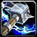
Stormstrike
Shaman · Enhancement · 1 rank · row 4 (level 25+)Instant strike for 100% normalized weapon damage; your next Lightning Bolt, Chain Lightning or Earth Shock within 12 sec deals 20% more damage. 8% of base mana, 8 sec cooldown.
In 4 of our builds: Enhancement, Enhancement leveling, Shaman tank (shield + Rockbiter) +1 more · Calculator

Strider Kick
Hunter · Survival · 1 rank · row 5 (level 30+)A melee strike for 100% weapon damage that gives you +30% movement speed for 3 sec. 8 sec cooldown.
In 2 of our builds: Survival Lone Wolf, Melee Survival with pet · Calculator
Subtlety
Druid · Restoration · 3 ranks · row 3 (level 20+)Your Nature and Arcane spells cause up to 30% less threat.
In 1 of our builds: Restoration PvP · Calculator

Summon Hawk
Hunter · Beast Mastery · 1 rank · row 4 (level 25+)A hawk dive-bombs your target for 32 Physical damage plus 5% of your ranged attack power, then fights beside you for 18 sec; up to 2 hawks at once. 11% of base mana. Shares a cooldown with Arcane Shot.
In 3 of our builds: Beast Mastery, Beast Mastery leveling, Marksmanship with pet · Calculator
Suppression
Warlock · Affliction · 5 ranks · row 1 (level 10+)Up to +5% hit chance and up to 20% less threat.
In 7 of our builds: Affliction Demonic Sacrifice, Affliction Ruin, Demonology Demonic Pact +4 more · Calculator

Surefooted
Hunter · Survival · 3 ranks · row 3 (level 20+)Up to +3% hit chance, and movement-slowing effects on you are up to 30% shorter.
In 3 of our builds: Survival Lone Wolf, Marksmanship PvP, Melee Survival with pet · Calculator
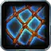
Survival Tactics
Hunter · Survival · 2 ranks · row 4 (level 25+)Traps and Feign Death are up to 10% less likely to be resisted.
Not in any of our builds yet. · Calculator

Survivalist
Hunter · Survival · 5 ranks · row 2 (level 15+)Up to 10% more total Health.
In 2 of our builds: Survival Lone Wolf, Melee Survival with pet · Calculator
Survivalist's Discipline
Hunter · Survival · 2 ranks · row 5 (level 30+)Traps and Deterrence have up to 40% shorter cooldowns.
Not in any of our builds yet. · Calculator
Sweeping Strikes
Warrior · Arms · 1 rank · row 5 (level 30+)Battle Stance: your next 5 melee attacks also hit one more nearby enemy; a charge is only used when a second enemy is hit. 30 Rage, 30 sec cooldown.
In 3 of our builds: Arms two-hander, Arms leveling, Arms PvP · Calculator

Swift Judgement
Paladin · Protection · 1 rank · row 4 (level 25+) · needs Templar's BulwarkUnleashes your Seal's Judgement without using up the Seal, on its own cooldown.
In 3 of our builds: Protection raid tank, Protection dungeon tank, Holy Shock tank (Holy/Protection) · Calculator

Swiftmend
Druid · Restoration · 1 rank · row 4 (level 25+)Instantly heals a target that has your own Rejuvenation or Regrowth for that effect's full periodic amount, without using up the effect. 20% of base mana, 40 yd, 15 sec cooldown.
In 2 of our builds: Restoration healer, Restoration PvP · Calculator
Templar's Bulwark
Paladin · Protection · 1 rank · row 3 (level 20+)An absorb shield equal to 100% of your max health for 8 sec. It is a Magic effect and can be dispelled. Applies Forbearance for 1 min. 5 min cooldown.
In 3 of our builds: Protection raid tank, Protection dungeon tank, Holy Shock tank (Holy/Protection) · Calculator

Thick Hide
Druid · Feral Combat · 3 ranks · row 2 (level 15+)Up to 3 extra base armor per level, plus up to 2 per Defense point above 5× your level, in Bear, Cat, Dire Bear and Moonkin Form.
In 2 of our builds: Feral bear tank, Restoration PvP · Calculator

Thundering Strikes
Shaman · Enhancement · 5 ranks · row 1 (level 10+)Up to +5% critical strike chance with all spells and attacks.
In 8 of our builds: Elemental, Enhancement, Restoration healer +5 more · Calculator
Tidal Focus
Shaman · Restoration · 5 ranks · row 1 (level 10+)Healing spells cost up to 5% less mana, and up to +5% hit chance.
In 5 of our builds: Elemental, Restoration healer, Elemental leveling +2 more · Calculator

Tidal Mastery
Shaman · Restoration · 5 ranks · row 4 (level 25+)Up to +5% critical strike chance with healing spells.
In 1 of our builds: Restoration healer · Calculator

Totemic Focus
Shaman · Restoration · 5 ranks · row 2 (level 15+)Totems, and summoning or moving them, cost up to 25% less mana.
In 1 of our builds: Elemental · Calculator

Toughness
Paladin · Protection · 5 ranks · row 3 (level 20+)Up to 10% more armor from items.
In 3 of our builds: Protection raid tank, Protection dungeon tank, Holy PvP healer · Calculator
Toughness
Shaman · Enhancement · 5 ranks · row 4 (level 25+)Up to 10% more Stamina.
In 2 of our builds: Elemental PvP, Shaman tank (shield + Rockbiter) · Calculator
Tranquil Spirit
Druid · Restoration · 5 ranks · row 4 (level 25+)Healing Touch and Tranquility cost up to 10% less mana.
Not in any of our builds yet. · Calculator

Trial by Fire
Shaman · Elemental · 2 ranks · row 4 (level 25+)Fire Nova deals up to 20% more damage with up to 4 sec less cooldown, and Magma Totem lasts up to 20 sec longer.
In 5 of our builds: Elemental, Enhancement, Elemental leveling +2 more · Calculator
Trueshot Aura
Hunter · Marksmanship · 1 rank · row 4 (level 25+)Party and raid members within 45 yd gain ranged attack power: 20 / 35 / 50 / 75 / 100 by spell rank (rank 1 comes with the talent).
In 6 of our builds: Beast Mastery, Marksmanship Lone Wolf, Survival Lone Wolf +3 more · Calculator

Turn Evil
Paladin · Retribution · 2 ranks · row 5 (level 30+)Turn Undead casts up to 1 sec faster with up to 10 sec less cooldown, and also works on Demons.
Not in any of our builds yet. · Calculator
Twilight Focus
Priest · Holy · 3 ranks · row 1 (level 10+)Up to a 70% chance that taking damage doesn't delay your spell casts.
In 2 of our builds: Shadow, Smite priest (Holy damage) · Calculator

Twin Disciplines
Priest · Discipline · 5 ranks · row 1 (level 10+)Your instant spells deal up to 5% more damage and healing.
In 6 of our builds: Discipline healer, Holy healer, Shadow +3 more · Calculator

Two-Handed Weapon Specialization
Warrior · Arms · 3 ranks · row 4 (level 25+)Up to 6% more damage (2 / 4 / 6%) with two-handed melee weapons.
In 3 of our builds: Arms two-hander, Arms leveling, Arms PvP · Calculator

Two-Handed Weapon Specialization
Paladin · Retribution · 3 ranks · row 4 (level 25+)While you wield a two-handed weapon: up to 6% more Holy and Physical damage (2 / 4 / 6%) and up to 20% less threat (7 / 14 / 20%).
In 5 of our builds: Retribution two-hander, Retribution leveling, Shockadin (two-hander + Holy Shock) +2 more · Calculator
Unbridled Wrath
Warrior · Fury · 5 ranks · row 2 (level 15+)Up to a 60% chance to gain 1 extra Rage when you deal melee weapon damage.
In 5 of our builds: Arms two-hander, Fury dual-wield, Arms leveling +2 more · Calculator

Unholy Power
Warlock · Demonology · 5 ranks · row 1 (level 10+)Your Imp, Voidwalker, Succubus, Incubus and Felhunter deal up to 10% more damage.
In 4 of our builds: Demonology Demonic Pact, Destruction with Sayaad, Affliction leveling +1 more · Calculator
Unleashed Fury
Hunter · Beast Mastery · 5 ranks · row 3 (level 20+)Your pet and hawks deal up to 15% more damage.
In 3 of our builds: Beast Mastery, Beast Mastery leveling, Marksmanship with pet · Calculator

Unsealed Wrath
Paladin · Retribution · 1 rank · row 7 (level 40+) · needs RepentanceMelee attacks store your active Seal for 15 sec, up to 3 times. Attacking with a different Seal spends the stored stacks.
In 2 of our builds: Retribution two-hander, Retribution leveling · Calculator

Unyielding Faith
Paladin · Retribution · 2 ranks · row 3 (level 20+)Fear and Disorient effects on you are up to 30% shorter.
Not in any of our builds yet. · Calculator

Vampiric Embrace
Priest · Shadow · 1 rank · row 4 (level 25+)For 30 sec your party is healed for 10% of your Shadow spell damage on the target, and you for 20%; this healing cannot crit. 30 sec cooldown.
In 2 of our builds: Shadow, Shadow leveling · Calculator
Vanguard
Warrior · Protection · 1 rank · row 4 (level 25+)Charge can be used in Defensive Stance.
In 1 of our builds: Protection shield tank · Calculator

Vengeance
Paladin · Retribution · 3 ranks · row 5 (level 30+) · needs Seal of CommandEach non-periodic critical hit gives up to 3% more Physical and Holy damage (1% per rank) for 30 sec, stacking 5 times.
In 4 of our builds: Retribution two-hander, Retribution leveling, Shockadin (two-hander + Holy Shock) +1 more · Calculator
Vengeance
Druid · Balance · 5 ranks · row 4 (level 25+) · needs Improved MoonfireArcane and Nature spell crits deal up to 100% more bonus damage.
In 2 of our builds: Moonkin, Balance multi-DoT leveling · Calculator
Venom
Rogue · Assassination · 1 rank · row 5 (level 30+)Passive: Shank makes your poisons deal 30% more damage and apply 20% more often for 6 sec.
In 1 of our builds: Mutilate · Calculator

Vigor
Rogue · Assassination · 2 ranks · row 3 (level 20+)Up to +10 maximum Energy.
In 4 of our builds: Mutilate, Combat, Combat leveling +1 more · Calculator
Vile Poisons
Rogue · Assassination · 5 ranks · row 4 (level 25+)Poisons deal up to 20% more damage and get up to +40% chance to resist dispels.
In 2 of our builds: Mutilate, Combat leveling · Calculator

Vindication
Paladin · Retribution · 3 ranks · row 3 (level 20+)Your damaging melee attacks have a chance to reduce the target's Attack Power by up to 200 (67 / 133 / 200) for 30 sec (values at level 60).
In 4 of our builds: Protection dungeon tank, Retribution two-hander, Shockadin (two-hander + Holy Shock) +1 more · Calculator

Wand Specialization
Priest · Discipline · 2 ranks · row 1 (level 10+)Wand damage up to +25%.
In 1 of our builds: Shadow leveling · Calculator

Wand Specialization
Mage · Arcane · 2 ranks · row 1 (level 10+)Wand damage up to +25%.
In 2 of our builds: Frost Fingers of Frost, Frost PvP · Calculator
Water Shield
Shaman · Restoration · 1 rank · row 3 (level 20+)3 water globes for 10 min: being hit or landing a spell crit uses a globe (at most one every few seconds) to restore 2% of your maximum mana.
In 4 of our builds: Elemental, Restoration healer, Elemental leveling +1 more · Calculator

Weapon Expertise
Rogue · Combat · 2 ranks · row 4 (level 25+) · needs PrecisionYour attacks are up to 2% less likely to be dodged or parried.
In 3 of our builds: Mutilate, Combat, Combat leveling · Calculator

Weaponmaster
Warrior · Arms · 5 ranks · row 5 (level 30+)Bonus by weapon type, up to: Axe/Polearm +5% crit chance, Mace/Staff ignore 15% of target armor, Sword 5% chance for an extra attack.
In 3 of our builds: Arms two-hander, Arms leveling, Arms PvP · Calculator

Wild Growth
Druid · Restoration · 1 rank · row 7 (level 40+) · needs Living Spirit3 sec cast: heals the target and its party members within 43.5 yd of it for 336 over 7 sec, fast at first and slower later. 550 mana, 40 yd, 6 sec cooldown.
In 2 of our builds: Restoration healer, Restoration PvP · Calculator
Winter's Chill
Mage · Frost · 5 ranks · row 6 (level 35+)Frostbolt and Fingers of Frost Ice Lances have up to a 100% chance to apply Winter's Chill, stacking 5 times: each stack makes your next Cone of Cold deal 20% more damage plus 7% of your spell damage.
In 2 of our builds: Frost Fingers of Frost, Frost leveling · Calculator

Wrack
Warlock · Affliction · 1 rank · row 7 (level 40+) · needs Siphon LifeChannel for 6 sec: about 60 Shadow damage every second at level 60, with strong spell-power scaling. While you channel, your Corruption, Siphon Life and Bane of Agony on the target deal their damage 100% faster (same duration; time skipped is kept if the channel ends early). Not boosted by Improved Drains. 200 mana, 30 yd.
In 3 of our builds: Affliction Demonic Sacrifice, Affliction Ruin, Drain-tank leveling (Voidwalker) · Calculator